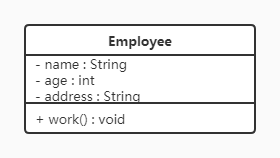

1、设计模式分类
创建型模式
用于描述“怎样创建对象”，它的主要特点是“将对象的创建与使用分离”。GoF（四人组）书中提供了单例、原型、工厂方法、抽象工厂、建造者等 5 种创建型模式。
结构型模式
用于描述如何将类或对象按某种布局组成更大的结构，GoF（四人组）书中提供了代理、适配器、桥接、装饰、外观、享元、组合等 7 种结构型模式。
行为型模式
用于描述类或对象之间怎样相互协作共同完成单个对象无法单独完成的任务，以及怎样分配职责。GoF（四人组）书中提供了模板方法、策略、命令、职责链、状态、观察者、中介者、迭代器、访问者、备忘录、解释器等 11 种行为型模式。
2、UML图 统一建模语言（Unified Modeling Language，UML）是用来设计软件的可视化建模语言。
2.1、类的表示方式 在UML类图中，类使用包含类名、属性(field) 和方法(method) 且带有分割线的矩形来表示，比如下图表示一个Employee类，它包含name,age和address这3个属性，以及work()方法。

属性/方法名称前加的加号和减号表示了这个属性/方法的可见性，UML类图中表示可见性的符号有三种：
+：表示public
-：表示private
#：表示protected
属性的完整表示方式是： 可见性 名称 ：类型 [ = 缺省值]
方法的完整表示方式是： 可见性 名称(参数列表) [ ： 返回类型]
2.2、类与类之间关系的表示方式 感觉没必要记，用到时再查吧。
3、软件设计原则 在软件开发中，为了提高软件系统的可维护性和可复用性，增加软件的可扩展性和灵活性，程序员要尽量根据6条原则来开发程序，从而提高软件开发效率、节约软件开发成本和维护成本。
3.1 开闭原则 对扩展开放，对修改关闭 。即使用接口和抽象类，扩展时实现新的派生类而不修改子类。增加新功能时添加新的代码，而不要修改原有代码。
3.2 里氏代换原则 里氏代换原则：任何基类可以出现的地方，子类一定可以出现。通俗理解：子类可以扩展父类的功能，但不能改变父类原有的功能。换句话说，子类继承父类时，除添加新的方法完成新增功能外，尽量不要重写父类的方法。
3.3 依赖倒转原则 高层模块不应该依赖低层模块，两者都应该依赖其抽象；抽象不应该依赖细节，细节应该依赖抽象。
简单说就是尽量让接口作为成员变量，而不要让实现类作为成员变量。
3.4 接口隔离原则 客户端不应该被迫依赖于它不使用的方法；一个类对另一个类的依赖应该建立在最小的接口上。
被迫依赖：类 B 为了定义一个已经在类 A 中定义了的方法而去继承类 A，此时类 B 被迫依赖于类 A 中其他它并不需要的方法。
应该将该方法单独抽象为接口，若所有实现类的方法体都一样，可以用 default 修饰并实现。
继承接口时也一样，不要使类被迫依赖于接口中其他不适用的方法。应该将接口拆分为多个接口。
3.5 迪米特法则 迪米特法则又叫最少知识原则。
只和你的直接朋友交谈，不跟“陌生人”说话（Talk only to your immediate friends and not to strangers）。
其含义是：如果两个软件实体无须直接通信，那么就不应当发生直接的相互调用，可以通过第三方转发该调用。其目的是降低类之间的耦合度，提高模块的相对独立性。
其实就是代理模式。
【例】明星与经纪人的关系实例
明星由于全身心投入艺术，所以许多日常事务由经纪人负责处理，如和粉丝的见面会，和媒体公司的业务洽淡等。这里的经纪人是明星的朋友，而粉丝和媒体公司是陌生人，所以适合使用迪米特法则。
3.6 合成复用原则 合成复用原则是指：尽量先使用组合或者聚合等关联关系来实现，其次才考虑使用继承关系来实现。
通常类的复用分为继承复用和合成复用两种。
4、创建者模式 创建型模式的主要关注点是“怎样创建对象？”，它的主要特点是“将对象的创建与使用分离”。
这样可以降低系统的耦合度，使用者不需要关注对象的创建细节。
创建型模式分为：
单例模式
工厂方法模式
抽象工程模式
原型模式
建造者模式
4.1 单例设计模式 单例模式（Singleton Pattern）是 Java 中最简单的设计模式之一。这种类型的设计模式属于创建型模式，它提供了一种创建对象的最佳方式。
这种模式涉及到一个单一的类，该类负责创建自己的对象，同时确保只有单个对象被创建。这个类提供了一种访问其唯一的对象的方式，可以直接访问，不需要实例化该类的对象。
4.1.1、饿汉式单例 饿汉式单例不论是否需要都先直接生成一个对象，当对象占用大量内存时会造成浪费。
1 2 3 4 5 6 7 8 9 10 11 12 13 14 15 16 17 public class Hungry private Byte[] data1 = new Byte[1024 * 1024 ]; private Byte[] data2 = new Byte[1024 * 1024 ]; private Byte[] data3 = new Byte[1024 * 1024 ]; private Byte[] data4 = new Byte[1024 * 1024 ]; private Hungry () private final static Hungry hungry = new Hungry(); public static Hungry getInstance () return hungry; } }
4.1.2、懒汉式单例 4.1.2.1、基础懒汉式
多线程下会出现问题
1 2 3 4 5 6 7 8 9 10 11 12 13 public class LazyMan private static LazyMan lazyMan; private LazyMan () public static LazyMan getInstance () if (lazyMan == null ) lazyMan = new LazyMan(); return lazyMan; } }
可以用 synchronized 修饰 getInstance() 方法解决线程安全问题，但是由于 getInstance() 方法在绝大多数情况下是只用于读取，是线程安全的，因此这种方式会影响性能。
4.1.2.2、DCL 懒汉式（Double Check Lock 双重检测锁定）
第一重判断 if (lazyMan == null) 无需解释，第二重判断原因：当 a 和 b 两线程都进入第一重判断之后，a 获得锁执行完毕后释放锁，此时 b 线程获取锁又执行一次实例化操作，从而出现问题。
实例加 volatile 的原因：lazyMan = new LazyMan(); 构造并不是原子操作，分为三部：
1、分配内存空间
2、在该内存空间初始化实例
3、将该内存空间地址赋值给 lazyMan ；
指令优化重新排序后可能按 1 3 2 的顺序执行，当 a 线程执行完 3 还没执行 2 时，lazyMan 已经不为 null ，此时线程 b 在第一重判断后直接返回 lazyMan ，但是 lazyMan 指向的空间还未初始化从而出现问题。volatile 通过限制指令重排使 CPU 只能按 1 2 3 的顺序执行从而解决问题。
1 2 3 4 5 6 7 8 9 10 11 12 13 14 15 16 17 public class LazyMan private volatile static LazyMan lazyMan; private LazyMan () public static LazyMan getInstance () if (lazyMan == null ) { synchronized (LazyMan.class) { if (lazyMan == null ) lazyMan = new LazyMan(); } } return lazyMan; } }
通过反射可以很轻松的破解 DCL 的单例模式。
但查看反射的 newInstance() 方法的源码可知，无法通过反射构造枚举对象，且枚举类的构造方法必须是私有的，因此枚举类是天然的单例模式。
使用枚举方式实现单例模式既没有线程安全问题，也无法通过反射破坏，但它是饿汉式单例，因此在不考虑内存优化时强烈推荐使用枚举方式。
用 jad 反编译枚举类的 .calss 文件可知，枚举类的默认构造函数如下
1 2 3 private ClassName (String s, int i) super (s, i); }
4.1.2.3、静态内部类（了解即可）
JVM 在加载外部类的过程中, 是不会加载静态内部类的, 只有内部类的属性/方法被调用时才会被加载, 并初始化其静态属性，达到了懒加载的效果。
1 2 3 4 5 6 7 8 9 10 11 12 public class LazyMan private LazyMan () private static class Inner private static final LazyMan lazyMan = new LazyMan(); } public static LazyMan getInstance () return Inner.lazyMan; } }
4.1.3、破坏及解决方案 除枚举方式外，上方所有方法实现的懒汉式单例模式都可以被破坏。有序列化和反射两种破坏方式。
序列化：将单例对象序列化到文件，再多次反序列化回来，每次反序列化得到的对象不同，从而破坏。
反射：对私有构造方法授权后可多次通过构造方法构造。
解决
在Singleton类中添加readResolve()方法，在反序列化时被反射调用，如果定义了这个方法，就调用方法返回这个方法中的值，如果没有定义，则返回新new出来的对象。
1 2 3 4 5 6 7 8 9 10 11 12 13 14 15 16 17 18 19 20 21 public class Singleton implements Serializable private Singleton () private static class SingletonHolder private static final Singleton INSTANCE = new Singleton(); } public static Singleton getInstance () return SingletonHolder.INSTANCE; } private Object readResolve () return SingletonHolder.INSTANCE; } }
1 2 3 4 5 6 7 8 9 10 11 12 13 14 15 16 17 18 19 20 21 22 23 24 25 26 27 28 29 30 31 public class Singleton private Singleton () if (instance != null ) { throw new RuntimeException(); } } private static volatile Singleton instance; public static Singleton getInstance () if (instance != null ) { return instance; } synchronized (Singleton.class) { if (instance != null ) { return instance; } instance = new Singleton(); return instance; } } }
4.1.4 JDK源码解析-Runtime类 Runtime类就是使用的单例设计模式。查看源码可以看出Runtime类使用的是饿汉式（静态属性）方式来实现单例模式的。
1 2 3 4 5 6 7 8 9 10 11 12 13 14 15 16 17 18 19 20 public class RuntimeDemo public static void main (String[] args) throws IOException Runtime runtime = Runtime.getRuntime(); System.out.println(runtime.totalMemory()); System.out.println(runtime.maxMemory()); Process process = runtime.exec("ipconfig" ); InputStream inputStream = process.getInputStream(); byte [] arr = new byte [1024 * 1024 * 100 ]; int b = inputStream.read(arr); System.out.println(new String(arr,0 ,b,"gbk" )); } }
4.2 工厂模式 在java中，万物皆对象，这些对象都需要创建，如果创建的时候直接new该对象，就会对该对象耦合严重，假如我们要更换对象，所有new对象的地方都需要修改一遍，这显然违背了软件设计的开闭原则。如果我们使用工厂来生产对象，我们就只和工厂打交道就可以了，彻底和对象解耦，如果要更换对象，直接在工厂里更换该对象即可，达到了与对象解耦的目的；所以说，工厂模式最大的优点就是：解耦 。
简单工厂模式即将 new 对象的操作抽取出来封装为工厂类的方法，需要对象时调用工厂类的方法即可，这只是一种编写习惯不算设计模式，这样做依然违反开闭原则，因为有新功能时还需要修改工厂类。
4.2.1 工厂方法模式 针对简单工厂模式中的缺点，使用工厂方法模式就可以完美的解决，完全遵循开闭原则。
概念：定义一个用于创建对象的接口，让子类决定实例化哪个产品类对象。工厂方法使一个产品类的实例化延迟到其工厂的子类。
1 2 3 4 5 6 7 8 9 10 11 12 13 14 15 16 17 18 19 public interface CoffeeFactory Coffee createCoffee () ; } public class LatteCoffeeFactory implements CoffeeFactory public Coffee createCoffee () return new LatteCoffee(); } } public class AmericanCoffeeFactory implements CoffeeFactory public Coffee createCoffee () return new AmericanCoffee(); } }
缺点： 每增加一个产品就要增加一个具体产品类和一个对应的具体工厂类，这增加了系统的复杂度。
4.2.2 抽象工厂模式 概念：是一种为访问类提供一个创建一组相关或相互依赖对象的接口，且访问类无须指定所要产品的具体类就能得到同族的不同等级的产品的模式结构。
抽象工厂模式是工厂方法模式的升级版本，工厂方法模式只生产一个等级的产品，而抽象工厂模式可生产多个等级的产品。即工厂方法模式只服务于一个类，只能为一个类生产对象；而抽象工厂模式同时服务于多个相关联的类，可以为多个类生产对象。如华为工厂可以同时生产华为的耳机、手机、电脑等。
1 2 3 4 5 6 7 8 9 10 11 12 13 14 15 16 17 18 19 20 21 22 23 24 25 26 27 28 29 30 public interface DessertFactory Coffee createCoffee () ; Dessert createDessert () ; } public class AmericanDessertFactory implements DessertFactory public Coffee createCoffee () return new AmericanCoffee(); } public Dessert createDessert () return new MatchaMousse(); } } public class ItalyDessertFactory implements DessertFactory public Coffee createCoffee () return new LatteCoffee(); } public Dessert createDessert () return new Tiramisu(); } }
缺点： 当产品族中需要增加一个新的产品时，所有的工厂类都需要进行修改。
4.2.3 模式扩展 简单工厂+配置文件解除耦合
可以通过工厂模式+配置文件的方式解除工厂对象和产品对象的耦合。在工厂类中加载配置文件中的全类名，并创建对象进行存储，客户端如果需要对象，直接进行获取即可。（Spring 原理）
第一步：定义配置文件
为了演示方便，我们使用properties文件作为配置文件，名称为bean.properties
1 2 american =com.itheima.pattern.factory.config_factory.AmericanCoffee latte =com.itheima.pattern.factory.config_factory.LatteCoffee
第二步：改进工厂类
1 2 3 4 5 6 7 8 9 10 11 12 13 14 15 16 17 18 19 20 21 22 23 24 25 26 27 28 public class CoffeeFactory private static Map<String,Coffee> map = new HashMap(); static { Properties p = new Properties(); InputStream is = CoffeeFactory.class.getClassLoader().getResourceAsStream("bean.properties" ); try { p.load(is); Set<Object> keys = p.keySet(); for (Object key : keys) { String className = p.getProperty((String) key); Class clazz = Class.forName(className); Coffee obj = (Coffee) clazz.newInstance(); map.put((String)key,obj); } } catch (Exception e) { e.printStackTrace(); } } public static Coffee createCoffee (String name) return map.get(name); } }
静态成员变量用来存储创建的对象（键存储的是名称，值存储的是对应的对象），而读取配置文件以及创建对象写在静态代码块中，目的就是只需要执行一次。
4.2.4 JDK源码中的工厂模式 Collection接口是抽象工厂类，ArrayList是具体的工厂类；Iterator接口是抽象商品类，ArrayList类中的Iter内部类是具体的商品类。在具体的工厂类中iterator()方法创建具体的商品类的对象。
4.3 原型模式 4.3.1 概述 用一个已经创建的实例作为原型，通过复制该原型对象来创建一个和原型对象相同的新对象。
4.3.2 结构 原型模式包含如下角色：
抽象原型类：规定了具体原型对象必须实现的的 clone() 方法。
具体原型类：实现抽象原型类的 clone() 方法，它是可被复制的对象。
访问类：使用具体原型类中的 clone() 方法来复制新的对象。
4.3.3 实现 原型模式的克隆分为浅克隆和深克隆。即浅拷贝和深拷贝。
浅拷贝：浅拷贝是对原对象的属性值进行精准复制，如果原对象的属性值是基本类型那就是值的复制，所以浅拷贝后修改基本类型不会修改到原对象的，如果原对象属性值是引用类型，那么就是对引用类型属性值的栈内存的复制，所以修改引用类型属性值的时候会修改到原对象。
深拷贝：如果原对象的属性值是基本类型那就是值的复制，如果是引用类型就会重新开辟内存将该属性中的值一一复制。
操作
是否指向同一个堆内存地址
基本数据类型
引用数据类型
赋值
是
改变会使原数据改变
改变会使原数据改变
浅拷贝
否
改变不会使原数据改变
改变会使原数据改变
深拷贝
否
改变不会使原数据改变
改变不会使原数据改变
Java中的Object类中提供了 clone() 方法来实现浅克隆。 Cloneable 接口是上面的结构中的抽象原型类，而实现了Cloneable接口的子实现类就是具体的原型类。其实 Cloneable 接口是一个空接口。
Realizetype（具体的原型类）：
1 2 3 4 5 6 7 8 9 10 11 12 13 public class Realizetype implements Cloneable public Realizetype () System.out.println("具体的原型对象创建完成！" ); } @Override protected Realizetype clone () throws CloneNotSupportedException System.out.println("具体原型复制成功！" ); return (Realizetype) super .clone(); } }
PrototypeTest（测试访问类）：
1 2 3 4 5 6 7 8 public class PrototypeTest public static void main (String[] args) throws CloneNotSupportedException Realizetype r1 = new Realizetype(); Realizetype r2 = r1.clone(); System.out.println("对象r1和r2是同一个对象？" + (r1 == r2)); } }
4.3.4 使用场景
对象的创建非常复杂的场景，可以使用原型模式快捷的创建对象。
对性能和安全要求比较高的场景。
4.3.5 扩展（深克隆） 方法一：重写 clone 方法。代码量太大，特别对于属性数量比较多、层次比较深的类而言，每个类都要重写clone方法太过繁琐。
方法二：反序列化。将对象 序列化反序列
4.4 建造者模式 4.4.1 概述 将一个复杂对象的构建与表示分离，使得同样的构建过程可以创建不同的表示。
分离了部件的构造(由Builder来负责)和装配(由Director负责)。 从而可以构造出复杂的对象。这个模式适用于：某个对象的构建过程复杂的情况。
4.4.2 结构 建造者（Builder）模式包含如下角色：
抽象建造者类（Builder）：这个接口规定要实现复杂对象的那些部分的创建，并不涉及具体的部件对象的创建。
具体建造者类（ConcreteBuilder）：实现 Builder 接口，完成复杂产品的各个部件的具体创建方法。在构造过程完成后，提供产品的实例。
产品类（Product）：要创建的复杂对象。
指挥者类（Director）：调用具体建造者来创建复杂对象的各个部分，在指导者中不涉及具体产品的信息，只负责保证对象各部分完整创建或按某种顺序创建。
4.4.3 实例 生产自行车是一个复杂的过程，它包含了车架，车座等组件的生产。而车架又有碳纤维，铝合金等材质的，车座有橡胶，真皮等材质。对于自行车的生产就可以使用建造者模式。
这里Bike是产品，包含车架，车座等组件；Builder是抽象建造者，MobikeBuilder和OfoBuilder是具体的建造者；Director是指挥者。
指挥者类 Director 在建造者模式中具有很重要的作用，它用于指导具体构建者如何构建产品，控制调用先后次序，并向调用者返回完整的产品类，但是有些情况下需要简化系统结构，可以把指挥者类并入抽象建造者。
4.4.4 模式扩展 建造者模式除了上面的用途外，在开发中还有一个常用的使用方式，就是当一个类构造器需要传入很多参数时，如果创建这个类的实例，代码可读性会非常差，而且很容易引入错误，此时就可以利用建造者模式进行重构。
重构前代码如下：
1 2 3 4 5 6 7 8 9 10 11 12 13 14 15 16 17 18 19 20 21 22 public class Phone private String cpu; private String screen; private String memory; private String mainboard; public Phone (String cpu, String screen, String memory, String mainboard) this .cpu = cpu; this .screen = screen; this .memory = memory; this .mainboard = mainboard; } } public class Client public static void main (String[] args) Phone phone = new Phone("intel" ,"三星屏幕" ,"金士顿" ,"华硕" ); System.out.println(phone); } }
重构后代码：
1 2 3 4 5 6 7 8 9 10 11 12 13 14 15 16 17 18 19 20 21 22 23 24 25 26 27 28 29 30 31 32 33 34 35 36 37 38 39 40 41 42 43 44 45 46 47 48 49 50 51 52 53 54 55 56 57 58 59 60 61 62 63 64 public class Phone private String cpu; private String screen; private String memory; private String mainboard; private Phone (Builder builder) cpu = builder.cpu; screen = builder.screen; memory = builder.memory; mainboard = builder.mainboard; } public static final class Builder private String cpu; private String screen; private String memory; private String mainboard; public Builder () public Builder cpu (String val) cpu = val; return this ; } public Builder screen (String val) screen = val; return this ; } public Builder memory (String val) memory = val; return this ; } public Builder mainboard (String val) mainboard = val; return this ; } public Phone build () return new Phone(this );} } @Override public String toString () return "Phone{" + "cpu='" + cpu + '\'' + ", screen='" + screen + '\'' + ", memory='" + memory + '\'' + ", mainboard='" + mainboard + '\'' + '}' ; } } public class Client public static void main (String[] args) Phone phone = new Phone.Builder() .cpu("intel" ) .mainboard("华硕" ) .memory("金士顿" ) .screen("三星" ) .build(); System.out.println(phone); } }
重构后的代码在使用起来更方便，某种程度上也可以提高开发效率。从软件设计上，对程序员的要求比较高。
4.5 创建者模式对比 4.5.1 工厂方法模式VS建造者模式 工厂方法模式注重的是整体对象的创建方式；而建造者模式注重的是部件构建的过程，意在通过一步一步地精确构造创建出一个复杂的对象。
我们举个简单例子来说明两者的差异，如要制造一个超人，如果使用工厂方法模式，直接产生出来的就是一个力大无穷、能够飞翔、内裤外穿的超人；而如果使用建造者模式，则需要组装手、头、脚、躯干等部分，然后再把内裤外穿，于是一个超人就诞生了。
4.5.2 抽象工厂模式VS建造者模式 抽象工厂模式实现对产品家族的创建，一个产品家族是这样的一系列产品：具有不同分类维度的产品组合，采用抽象工厂模式则是不需要关心构建过程，只关心什么产品由什么工厂生产即可。
建造者模式则是要求按照指定的蓝图建造产品，它的主要目的是通过组装零配件而产生一个新产品。
如果将抽象工厂模式看成汽车配件生产工厂，生产一个产品族的产品，那么建造者模式就是一个汽车组装工厂，通过对部件的组装可以返回一辆完整的汽车。
5，结构型模式 结构型模式描述如何将类或对象按某种布局组成更大的结构。它分为类结构型模式和对象结构型模式，前者采用继承机制来组织接口和类，后者釆用组合或聚合来组合对象。
由于组合关系或聚合关系比继承关系耦合度低，满足“合成复用原则”，所以对象结构型模式比类结构型模式具有更大的灵活性。
结构型模式分为以下 7 种：
代理模式
适配器模式
装饰者模式
桥接模式
外观模式
组合模式
享元模式
5.1 代理模式 5.1.1 概述 由于某些原因需要给某对象提供一个代理以控制对该对象的访问。这时，访问对象不适合或者不能直接引用目标对象，代理对象作为访问对象和目标对象之间的中介。
Java中的代理按照代理类生成时机不同又分为静态代理和动态代理。静态代理代理类在编译期就生成，而动态代理代理类则是在Java运行时动态生成。动态代理又有JDK代理和CGLib代理两种。
5.1.2 结构 代理（Proxy）模式分为三种角色：
抽象主题（Subject）类： 通过接口或抽象类声明真实主题和代理对象实现的业务方法。
真实主题（Real Subject）类： 实现了抽象主题中的具体业务，是代理对象所代表的真实对象，是最终要引用的对象。
代理（Proxy）类 ： 提供了与真实主题相同的接口，其内部含有对真实主题的引用，它可以访问、控制或扩展真实主题的功能。
5.1.3 静态代理 案例：代售点代理火车站卖票
1 2 3 4 5 6 7 8 9 10 11 12 13 14 15 16 17 18 19 20 21 22 23 24 25 26 27 28 29 30 31 public interface SellTickets void sell () } public class TrainStation implements SellTickets public void sell () System.out.println("火车站卖票" ); } } public class ProxyPoint implements SellTickets private TrainStation station = new TrainStation(); public void sell () System.out.println("代理点收取一些服务费用" ); station.sell(); } } public class Client public static void main (String[] args) ProxyPoint pp = new ProxyPoint(); pp.sell(); } }
从上面代码中可以看出测试类直接访问的是ProxyPoint类对象，也就是说ProxyPoint作为访问对象和目标对象的中介。同时也对sell方法进行了增强（代理点收取一些服务费用）。
5.1.4 JDK动态代理 JDK动态代理的代理类与被代理类继承同一个接口。
Java中提供了一个动态代理类Proxy，Proxy并不是我们上述所说的代理对象的类，而是提供了一个创建代理对象的静态方法（newProxyInstance方法）来获取代理对象。
代码如下：
1 2 3 4 5 6 7 8 9 10 11 12 13 14 15 16 17 18 19 20 21 22 23 24 25 26 27 28 29 30 31 32 33 34 35 36 37 38 39 40 41 42 43 44 45 46 47 48 49 50 51 52 53 54 55 56 57 58 59 60 61 public interface SellTickets void sell () } public class TrainStation implements SellTickets public void sell () System.out.println("火车站卖票" ); } } public class ProxyFactory private SellTickets station; public ProxyFactory (SellTickets station) this .station = station; } public SellTickets getProxyObject () SellTickets sellTickets = (SellTickets) Proxy.newProxyInstance(station.getClass().getClassLoader(), station.getClass().getInterfaces(), new InvocationHandler() { public Object invoke (Object proxy, Method method, Object[] args) throws Throwable System.out.println("代理点收取一些服务费用(JDK动态代理方式)" ); Object result = method.invoke(station, args); return result; } }); return sellTickets; } } public class Client public static void main (String[] args) ProxyFactory factory = new ProxyFactory(new TrainStation()); SellTickets proxyObject = factory.getProxyObject(); proxyObject.sell(); } }
使用了动态代理，我们思考下面问题：
1 2 3 4 5 6 7 8 9 10 11 12 13 14 15 16 17 18 19 20 21 22 23 24 25 26 public final class $Proxy0 extends Proxy implements SellTickets private static Method m3; public $Proxy0(InvocationHandler invocationHandler) { super (invocationHandler); } static { m3 = Class.forName("com.itheima.proxy.dynamic.jdk.SellTickets" ).getMethod("sell" , new Class[0 ]); } public final void sell () this .h.invoke(this , m3, null ); } } public class Proxy implements java .io .Serializable protected InvocationHandler h; protected Proxy (InvocationHandler h) this .h = h; } }
执行流程如下：
1. 在测试类中通过代理对象调用sell()方法
2. 根据多态的特性，执行的是代理类（$Proxy0）中的sell()方法
3. 代理类（$Proxy0）中的sell()方法中又调用了InvocationHandler接口的子实现类对象的invoke方法
4. invoke方法通过反射执行了真实对象所属类(TrainStation)中的sell()方法
5.1.5 CGLIB动态代理 CGLIB动态代理的代理类是被代理类的子类。
同样是上面的案例，我们再次使用CGLIB代理实现。
如果没有定义SellTickets接口，只定义了TrainStation(火车站类)。很显然JDK代理是无法使用了，因为JDK动态代理要求必须定义接口，对接口进行代理。
CGLIB是一个功能强大，高性能的代码生成包。它为没有实现接口的类提供代理，为JDK的动态代理提供了很好的补充。
CGLIB是第三方提供的包，所以需要引入jar包的坐标：
1 2 3 4 5 <dependency > <groupId > cglib</groupId > <artifactId > cglib</artifactId > <version > 2.2.2</version > </dependency >
代码如下：
1 2 3 4 5 6 7 8 9 10 11 12 13 14 15 16 17 18 19 20 21 22 23 24 25 26 27 28 29 30 31 32 33 34 35 36 37 38 39 40 41 42 43 44 45 46 47 48 49 50 public class TrainStation public void sell () System.out.println("火车站卖票" ); } } public class ProxyFactory implements MethodInterceptor private TrainStation target = new TrainStation(); public TrainStation getProxyObject () Enhancer enhancer =new Enhancer(); enhancer.setSuperclass(target.getClass()); enhancer.setCallback(this ); TrainStation obj = (TrainStation) enhancer.create(); return obj; } public TrainStation intercept (Object o, Method method, Object[] args, MethodProxy methodProxy) throws Throwable System.out.println("代理点收取一些服务费用(CGLIB动态代理方式)" ); TrainStation result = (TrainStation) methodProxy.invokeSuper(o, args); return result; } } public class Client public static void main (String[] args) ProxyFactory factory = new ProxyFactory(); TrainStation proxyObject = factory.getProxyObject(); proxyObject.sell(); } }
5.1.6 三种代理的对比 JDK 1.8 之后，JDK 动态代理效率高于 CGLIB 动态代理，因此有接口时用 JDK 动态代理。
动态代理和静态代理
动态代理与静态代理相比较，最大的好处是接口中声明的所有方法都被转移到调用处理器一个集中的方法中处理（InvocationHandler.invoke）。这样，在接口方法数量比较多的时候，我们可以进行灵活处理，而不需要像静态代理那样每一个方法进行中转。
如果接口增加一个方法，静态代理模式除了所有实现类需要实现这个方法外，所有代理类也需要实现此方法。增加了代码维护的复杂度。而动态代理不会出现该问题
5.1.7 优缺点 优点：
代理模式在客户端与目标对象之间起到一个中介作用和保护目标对象的作用；
代理对象可以扩展目标对象的功能；
代理模式能将客户端与目标对象分离，在一定程度上降低了系统的耦合度；
缺点：
5.1.8 使用场景
远程（Remote）代理
本地服务通过网络请求远程服务。为了实现本地到远程的通信，我们需要实现网络通信，处理其中可能的异常。为良好的代码设计和可维护性，我们将网络通信部分隐藏起来，只暴露给本地服务一个接口，通过该接口即可访问远程服务提供的功能，而不必过多关心通信部分的细节。
防火墙（Firewall）代理
当你将浏览器配置成使用代理功能时，防火墙就将你的浏览器的请求转给互联网；当互联网返回响应时，代理服务器再把它转给你的浏览器。
保护（Protect or Access）代理
控制对一个对象的访问，如果需要，可以给不同的用户提供不同级别的使用权限。
5.2 适配器模式 5.2.1 概述 定义：将一个类的接口转换成客户希望的另外一个接口，使得原本由于接口不兼容而不能一起工作的那些类能一起工作。 比如 VGA 转 HDMI 转换器就是适配器，他使得 VGA 接口能与 HDMI 线一起工作。
适配器模式分为类适配器模式和对象适配器模式，前者类之间的耦合度比后者高，且要求程序员了解现有组件库中的相关组件的内部结构，所以应用相对较少些。
5.2.2 结构 适配器模式（Adapter）包含以下主要角色：
目标（Target）接口：当前系统业务所期待的接口，它可以是抽象类或接口。（当前正在使用的类）
适配者（Adaptee）类：它是被访问和适配的现存组件库中的组件接口。(新出现的类，不被当前系统支持)
适配器（Adapter）类：它是一个转换器，通过继承或引用适配者的对象，把适配者接口转换成目标接口，让客户按目标接口的格式访问适配者。
5.2.3 类适配器模式 实现方式：定义一个适配器类来实现目标接口，同时又继承适配者类。实现目标接口中的方法时调用适配者类的方法。
缺点：类适配器模式违背了合成复用原则。类适配器只有客户类有一个接口规范的情况下可用，反之不可用，（适配器类已经继承了适配者类，无法再继承目标类）。
5.2.4 对象适配器模式 实现方式：定义一个适配器类来实现目标接口，同时引用适配者类作为成员变量。
这种方式符合合成复用原则，且当没有目标接口时，可以继承目标类实现。完美解决类适配器模式的两个问题
1 2 3 4 5 6 7 8 9 10 11 12 13 14 15 16 17 18 19 20 21 22 23 24 25 26 27 28 29 30 31 32 33 34 35 36 37 38 39 40 41 42 43 44 45 46 47 48 49 50 51 52 53 54 55 56 57 58 59 60 61 62 63 64 65 66 67 68 69 70 71 72 73 74 75 76 77 78 79 80 81 82 83 84 85 86 87 88 public interface SDCard String readSD () ; void writeSD (String msg) } public class SDCardImpl implements SDCard public String readSD () String msg = "sd card read a msg :hello word SD" ; return msg; } public void writeSD (String msg) System.out.println("sd card write msg : " + msg); } } public class Computer public String readSD (SDCard sdCard) if (sdCard == null ) { throw new NullPointerException("sd card null" ); } return sdCard.readSD(); } } public interface TFCard String readTF () ; void writeTF (String msg) } public class TFCardImpl implements TFCard public String readTF () String msg ="tf card read msg : hello word tf card" ; return msg; } public void writeTF (String msg) System.out.println("tf card write a msg : " + msg); } } public class SDAdapterTF implements SDCard private TFCard tfCard; public SDAdapterTF (TFCard tfCard) this .tfCard = tfCard; } public String readSD () System.out.println("adapter read tf card " ); return tfCard.readTF(); } public void writeSD (String msg) System.out.println("adapter write tf card" ); tfCard.writeTF(msg); } } public class Client public static void main (String[] args) Computer computer = new Computer(); SDCard sdCard = new SDCardImpl(); System.out.println(computer.readSD(sdCard)); System.out.println("------------" ); SDAdapterTF adapter = new SDAdapterTF(); System.out.println(computer.readSD(adapter)); } }
注意：还有一个适配器模式是接口适配器模式。当不希望实现一个接口中所有的方法时，可以创建一个抽象类Adapter ，实现所有方法。而此时我们只需要继承该抽象类即可。
5.2.5 应用场景
以前开发的系统存在满足新系统功能需求的类，但其接口同新系统的接口不一致。
使用第三方提供的组件，但组件接口定义和自己要求的接口定义不同。
5.2.5 对象适配器模式在JDK的应用 StreamDecoder 作为适配器将InputStream（字节流）转换为了Reader（字符流）。
StreamDecoder 解码的操作即是将字节转为字符。
从上图可以看出：
InputStreamReader 只是对 StreamDecoder 进行了封装，实际的适配器是 StreamDecoder 。
StreamDecoder不是Java SE API中的内容，是Sun JDK给出的自身实现。但我们知道他们对构造方法中的字节流类（InputStream）进行封装，并通过该类进行了字节流和字符流之间的解码转换。
5.3 装饰者模式 5.3.1 概述 指在不改变现有对象结构的情况下，动态地给该对象增加一些职责（即增加其额外功能）的模式。
5.3.2 结构 装饰（Decorator）模式中的角色：
抽象构件（Component）角色 ：定义一个抽象接口以规范准备接收附加责任的对象。
具体构件（Concrete Component）角色 ：实现抽象构件，通过装饰角色为其添加一些职责。
抽象装饰（Decorator）角色 ： 继承或实现抽象构件，并包含具体构件的实例，可以通过其子类扩展具体构件的功能。
具体装饰（ConcreteDecorator）角色 ：实现抽象装饰的相关方法，并给具体构件对象添加附加的责任。
5.3.3 案例 1 2 3 4 5 6 7 8 9 10 11 12 13 14 15 16 17 18 19 20 21 22 23 24 25 26 27 28 29 30 31 32 33 34 35 36 37 38 39 40 41 42 43 44 45 46 47 48 49 50 51 52 53 54 55 56 57 58 59 60 61 62 63 64 65 66 67 68 69 70 71 72 73 74 75 76 77 78 79 80 81 82 83 84 85 86 87 88 89 90 91 92 93 94 95 96 97 98 99 100 101 102 103 104 105 106 107 108 109 110 111 112 113 114 115 116 117 118 119 120 121 122 123 124 public abstract class FastFood private float price; private String desc; public FastFood () public FastFood (float price, String desc) this .price = price; this .desc = desc; } public void setPrice (float price) this .price = price; } public float getPrice () return price; } public String getDesc () return desc; } public void setDesc (String desc) this .desc = desc; } public abstract float cost () } public class FriedRice extends FastFood public FriedRice () super (10 , "炒饭" ); } public float cost () return getPrice(); } } public class FriedNoodles extends FastFood public FriedNoodles () super (12 , "炒面" ); } public float cost () return getPrice(); } } public abstract class Garnish extends FastFood private FastFood fastFood; public FastFood getFastFood () return fastFood; } public void setFastFood (FastFood fastFood) this .fastFood = fastFood; } public Garnish (FastFood fastFood, float price, String desc) super (price,desc); this .fastFood = fastFood; } } public class Egg extends Garnish public Egg (FastFood fastFood) super (fastFood,1 ,"鸡蛋" ); } public float cost () return getPrice() + getFastFood().getPrice(); } @Override public String getDesc () return super .getDesc() + getFastFood().getDesc(); } } public class Bacon extends Garnish public Bacon (FastFood fastFood) super (fastFood,2 ,"培根" ); } @Override public float cost () return getPrice() + getFastFood().getPrice(); } @Override public String getDesc () return super .getDesc() + getFastFood().getDesc(); } } public class Client public static void main (String[] args) FastFood food = new FriedRice(); System.out.println(food.getDesc() + " " + food.cost() + "元" ); System.out.println("========" ); FastFood food1 = new FriedRice(); food1 = new Egg(food1); System.out.println(food1.getDesc() + " " + food1.cost() + "元" ); System.out.println("========" ); FastFood food2 = new FriedNoodles(); food2 = new Bacon(food2); System.out.println(food2.getDesc() + " " + food2.cost() + "元" ); } }
好处：
5.3.4 使用场景
当不能采用继承的方式对系统进行扩充或者采用继承不利于系统扩展和维护时。
不能采用继承的情况主要有两类：
第一类是系统中存在大量独立的扩展，为支持每一种组合将产生大量的子类，使得子类数目呈爆炸性增长；
第二类是因为类定义不能继承（如final类）
在不影响其他对象的情况下，以动态、透明的方式给单个对象添加职责。
当对象的功能要求可以动态地添加，也可以再动态地撤销时。
5.3.5 JDK源码解析 IO流中的包装类使用到了装饰者模式。BufferedInputStream，BufferedOutputStream，BufferedReader，BufferedWriter。
我们以BufferedWriter举例来说明，先看看如何使用BufferedWriter
1 2 3 4 5 6 7 8 9 10 11 12 13 public class Demo public static void main (String[] args) throws Exception FileWriter fw = new FileWriter("C:\\Users\\Think\\Desktop\\a.txt" ); BufferedWriter bw = new BufferedWriter(fw); bw.write("hello Buffered" ); bw.close(); } }
使用起来感觉确实像是装饰者模式，接下来看它们的结构：
BufferedWriter使用装饰者模式对Writer子实现类进行了增强，添加了缓冲区，提高了写数据的效率。
5.3.6 代理和装饰者的区别 静态代理和装饰者模式的区别：
相同点：
都要实现与目标类相同的业务接口
在两个类中都要声明目标对象
都可以在不修改目标类的前提下增强目标方法
不同点：
目的不同
获取目标对象构建的地方不同
5.4 桥接模式 5.4.1 概述 将抽象与实现分离，使它们可以独立变化。它是用组合关系代替继承关系来实现，从而降低了抽象和实现这两个可变维度的耦合度。
用人话说就是一件事物或一个产品由多个属性构成，不同属性的组合构成的整体功能也不同，且属性的值会扩展。为每个属性都定义一个接口或抽象类，且为每个属性的具体值都实现其相应接口。在这些属性中选一个主属性聚合其他属性，并调用其方法从而作为一个整体使用。此处聚合即为桥接。（个人理解）
5.4.2 结构 桥接（Bridge）模式包含以下主要角色：
抽象化（Abstraction）角色 ：定义抽象类，并包含一个对实现化对象的引用。（主维度接口）
扩展抽象化（Refined Abstraction）角色 ：是抽象化角色的子类，实现父类中的业务方法，并通过组合关系调用实现化角色中的业务方法。（主维度具体实现类）
实现化（Implementor）角色 ：定义实现化角色的接口，供扩展抽象化角色调用。（副维度接口）
具体实现化（Concrete Implementor）角色 ：给出实现化角色接口的具体实现。（副维度实现类）
5.4.3 案例 【例】视频播放器
需要开发一个跨平台视频播放器，可以在不同操作系统平台（如Windows、Mac、Linux等）上播放多种格式的视频文件，常见的视频格式包括RMVB、AVI、WMV等。该播放器包含了两个维度，适合使用桥接模式。
类图如下：
代码如下：
1 2 3 4 5 6 7 8 9 10 11 12 13 14 15 16 17 18 19 20 21 22 23 24 25 26 27 28 29 30 31 32 33 34 35 36 37 38 39 40 41 42 43 44 45 46 47 48 49 50 51 52 53 54 55 56 57 58 59 60 61 62 63 public interface VideoFile void decode (String fileName) } public class AVIFile implements VideoFile public void decode (String fileName) System.out.println("avi视频文件：" + fileName); } } public class RmvbFile implements VideoFile public void decode (String fileName) System.out.println("rmvb文件：" + fileName); } } public abstract class OperatingSystem protected VideoFile videoFile; public OperatingSystem (VideoFile videoFile) this .videoFile = videoFile; } public abstract void play (String fileName) } public class Windows extends OperatingSystem public Windows (VideoFile videoFile) super (videoFile); } public void play (String fileName) videoFile.decode(fileName); } } public class Mac extends OperatingSystem public Mac (VideoFile videoFile) super (videoFile); } public void play (String fileName) videoFile.decode(fileName); } } public class Client public static void main (String[] args) OperatingSystem os = new Windows(new AVIFile()); os.play("战狼3" ); } }
好处：
5.4.4 使用场景
当一个类存在两个独立变化的维度，且这两个维度都需要进行扩展时。
当一个系统不希望使用继承或因为多层次继承导致系统类的个数急剧增加时。
当一个系统需要在构件的抽象化角色和具体化角色之间增加更多的灵活性时。避免在两个层次之间建立静态的继承联系，通过桥接模式可以使它们在抽象层建立一个关联关系。
5.5 外观模式 5.5.1 概述 有些人可能炒过股票，但其实大部分人都不太懂，这种没有足够了解证券知识的情况下做股票是很容易亏钱的，刚开始炒股肯定都会想，如果有个懂行的帮帮手就好，其实基金就是个好帮手，支付宝里就有许多的基金，它将投资者分散的资金集中起来，交由专业的经理人进行管理，投资于股票、债券、外汇等领域，而基金投资的收益归持有者所有，管理机构收取一定比例的托管管理费用。
定义：
又名门面模式，是一种通过为多个复杂的子系统提供一个一致的接口，而使这些子系统更加容易被访问的模式。该模式对外有一个统一接口，外部应用程序不用关心内部子系统的具体的细节，这样会大大降低应用程序的复杂度，提高了程序的可维护性。
外观（Facade）模式是“迪米特法则”的典型应用
5.5.2 结构 外观（Facade）模式包含以下主要角色：
外观（Facade）角色：为多个子系统对外提供一个共同的接口。
子系统（Sub System）角色：实现系统的部分功能，客户可以通过外观角色访问它。
5.5.3 案例 【例】智能家电控制
小明的爷爷已经60岁了，一个人在家生活：每次都需要打开灯、打开电视、打开空调；睡觉时关闭灯、关闭电视、关闭空调；操作起来都比较麻烦。所以小明给爷爷买了智能音箱，可以通过语音直接控制这些智能家电的开启和关闭。
1 2 3 4 5 6 7 8 9 10 11 12 13 14 15 16 17 18 19 20 21 22 23 24 25 26 27 28 29 30 31 32 33 34 35 36 37 38 39 40 41 42 43 44 45 46 47 48 49 50 51 52 53 54 55 56 57 58 59 60 61 62 63 64 65 66 67 68 69 70 71 72 73 74 75 76 77 78 79 80 81 82 83 public class Light public void on () System.out.println("打开了灯...." ); } public void off () System.out.println("关闭了灯...." ); } } public class TV public void on () System.out.println("打开了电视...." ); } public void off () System.out.println("关闭了电视...." ); } } public class AirCondition public void on () System.out.println("打开了空调...." ); } public void off () System.out.println("关闭了空调...." ); } } public class SmartAppliancesFacade private Light light; private TV tv; private AirCondition airCondition; public SmartAppliancesFacade () light = new Light(); tv = new TV(); airCondition = new AirCondition(); } public void say (String message) if (message.contains("打开" )) { on(); } else if (message.contains("关闭" )) { off(); } else { System.out.println("我还听不懂你说的！！！" ); } } private void on () System.out.println("起床了" ); light.on(); tv.on(); airCondition.on(); } private void off () System.out.println("睡觉了" ); light.off(); tv.off(); airCondition.off(); } } public class Client public static void main (String[] args) SmartAppliancesFacade facade = new SmartAppliancesFacade(); facade.say("打开家电" ); facade.say("关闭家电" ); } }
好处：
降低了子系统与客户端之间的耦合度，使得子系统的变化不会影响调用它的客户类。
对客户屏蔽了子系统组件，减少了客户处理的对象数目，并使得子系统使用起来更加容易。
缺点：
5.5.4 使用场景
对分层结构系统构建时，使用外观模式定义子系统中每层的入口点可以简化子系统之间的依赖关系。
当一个复杂系统的子系统很多时，外观模式可以为系统设计一个简单的接口供外界访问。
当客户端与多个子系统之间存在很大的联系时，引入外观模式可将它们分离，从而提高子系统的独立性和可移植性。
5.5.5 源码解析 使用tomcat作为web容器时，接收浏览器发送过来的请求，tomcat会将请求信息封装成ServletRequest对象，如下图①处对象。但是大家想想ServletRequest是一个接口，它还有一个子接口HttpServletRequest，而我们知道该request对象肯定是一个HttpServletRequest对象的子实现类对象，到底是哪个类的对象呢？可以通过输出request对象，我们就会发现是一个名为RequestFacade的类的对象。
RequestFacade类就使用了外观模式。先看结构图：(这个例子反倒像是静态代理)
为什么在此处使用外观模式呢？
定义 RequestFacade 类，实现 ServletRequest ，同时定义私有成员变量 Request ，并且方法的实现调用 Request 的实现。然后，将 RequestFacade上转为 ServletRequest 传给 servlet 的 service 方法，这样即使在 servlet 中被下转为 RequestFacade ，也不能访问私有成员变量对象中的方法。既用了 Request ，又能防止其中方法被不合理的访问。
5.6 组合模式 5.6.1 概述 文件系统的结构是树形结构。在树形结构中可以通过调用某个方法来遍历整个树，当我们找到某个叶子节点后，就可以对叶子节点进行相关的操作。可以将这颗树理解成一个大的容器，容器里面包含很多的成员对象，这些成员对象即可是容器对象(非叶子节点)也可以是叶子对象。但是由于容器对象和叶子对象在功能上面的区别，使得我们在使用的过程中必须要区分容器对象和叶子对象，但是这样就会给客户带来不必要的麻烦，作为客户而已，它始终希望能够一致的对待容器对象和叶子对象。
定义：
又名部分整体模式，是用于把一组相似的对象当作一个单一的对象。组合模式依据树形结构来组合对象，用来表示部分以及整体层次。这种类型的设计模式属于结构型模式，它创建了对象组的树形结构。
5.6.2 结构 组合模式主要包含三种角色：
抽象根节点（Component）：定义系统各层次对象的共有方法和属性，可以预先定义一些默认行为和属性。
树枝节点（Composite）：定义树枝节点的行为，存储子节点，组合树枝节点和叶子节点形成一个树形结构。
叶子节点（Leaf）：叶子节点对象，其下再无分支，是系统层次遍历的最小单位。
5.6.3 案例实现 【例】软件菜单
代码实现：
不管是菜单还是菜单项，都应该继承自统一的接口，这里姑且将这个统一的接口称为菜单组件。
1 2 3 4 5 6 7 8 9 10 11 12 13 14 15 16 17 18 19 20 21 22 23 24 25 26 27 28 public abstract class MenuComponent protected String name; protected int level; public void add (MenuComponent menuComponent) throw new UnsupportedOperationException(); } public void remove (MenuComponent menuComponent) throw new UnsupportedOperationException(); } public MenuComponent getChild (int i) throw new UnsupportedOperationException(); } public String getName () return name; } public abstract void print () }
这里的MenuComponent定义为抽象类，因为有一些共有的属性和行为要在该类中实现，Menu和MenuItem类就可以只覆盖自己感兴趣的方法，而不用搭理不需要或者不感兴趣的方法，举例来说，Menu类可以包含子菜单，因此需要覆盖add()、remove()、getChild()方法，但是MenuItem就不应该有这些方法。这里给出的默认实现是抛出异常，你也可以根据自己的需要改写默认实现。
1 2 3 4 5 6 7 8 9 10 11 12 13 14 15 16 17 18 19 20 21 22 23 24 25 26 27 28 29 30 31 32 33 34 35 36 37 public class Menu extends MenuComponent private List<MenuComponent> menuComponentList; public Menu (String name,int level) this .level = level; this .name = name; menuComponentList = new ArrayList<MenuComponent>(); } @Override public void add (MenuComponent menuComponent) menuComponentList.add(menuComponent); } @Override public void remove (MenuComponent menuComponent) menuComponentList.remove(menuComponent); } @Override public MenuComponent getChild (int i) return menuComponentList.get(i); } @Override public void print () for (int i = 1 ; i < level; i++) { System.out.print("--" ); } System.out.println(name); for (MenuComponent menuComponent : menuComponentList) { menuComponent.print(); } } }
Menu类已经实现了除了getName方法的其他所有方法，因为Menu类具有添加菜单，移除菜单和获取子菜单的功能。
1 2 3 4 5 6 7 8 9 10 11 12 13 14 15 public class MenuItem extends MenuComponent public MenuItem (String name,int level) this .name = name; this .level = level; } @Override public void print () for (int i = 1 ; i < level; i++) { System.out.print("--" ); } System.out.println(name); } }
MenuItem是菜单项，不能再有子菜单，所以添加菜单，移除菜单和获取子菜单的功能并不能实现。
5.6.4 组合模式的分类 在使用组合模式时，根据抽象构件类的定义形式，我们可将组合模式分为透明组合模式和安全组合模式两种形式。
透明组合模式
透明组合模式中，抽象根节点角色中声明了所有用于管理成员对象的方法，比如在示例中 MenuComponent 声明了 add、remove 、getChild 方法，这样做的好处是确保所有的构件类都有相同的接口。透明组合模式也是组合模式的标准形式。
透明组合模式的缺点是不够安全，因为叶子对象和容器对象在本质上是有区别的，叶子对象不可能有下一个层次的对象，即不可能包含成员对象，因此为其提供 add()、remove() 等方法是没有意义的，这在编译阶段不会出错，但在运行阶段如果调用这些方法可能会出错（如果没有提供相应的错误处理代码）
安全组合模式
在安全组合模式中，在抽象构件角色中没有声明任何用于管理成员对象的方法，而是在树枝节点 Menu 类中声明并实现这些方法。安全组合模式的缺点是不够透明，因为叶子构件和容器构件具有不同的方法，且容器构件中那些用于管理成员对象的方法没有在抽象构件类中定义，因此客户端不能完全针对抽象编程，必须有区别地对待叶子构件和容器构件。
5.6.5 优点
组合模式可以清楚地定义分层次的复杂对象，表示对象的全部或部分层次，它让客户端忽略了层次的差异，方便对整个层次结构进行控制。
客户端可以一致地使用一个组合结构或其中单个对象，不必关心处理的是单个对象还是整个组合结构，简化了客户端代码。
在组合模式中增加新的树枝节点和叶子节点都很方便，无须对现有类库进行任何修改，符合“开闭原则”。
组合模式为树形结构的面向对象实现提供了一种灵活的解决方案，通过叶子节点和树枝节点的递归组合，可以形成复杂的树形结构，但对树形结构的控制却非常简单。
5.6.6 使用场景 组合模式正是应树形结构而生，所以组合模式的使用场景就是出现树形结构的地方。比如：文件目录显示，多级目录呈现等树形结构数据的操作。
5.7 享元模式 5.7.1 概述 定义：
运用共享技术来有效地支持大量细粒度对象的复用。它通过共享已经存在的对象来大幅度减少需要创建的对象数量、避免大量相似对象的开销，从而提高系统资源的利用率。
5.7.2 结构 享元（Flyweight ）模式中存在以下两种状态：
内部状态，即不会随着环境的改变而改变的可共享部分。
外部状态，指随环境改变而改变的不可以共享的部分。享元模式的实现要领就是区分应用中的这两种状态，并将外部状态外部化。
享元模式的主要有以下角色：
抽象享元角色（Flyweight）：通常是一个接口或抽象类，在抽象享元类中声明了具体享元类公共的方法，这些方法可以向外界提供享元对象的内部数据（内部状态），同时也可以通过这些方法来设置外部数据（外部状态）。
具体享元（Concrete Flyweight）角色 ：它实现了抽象享元类，称为享元对象；在具体享元类中为内部状态提供了存储空间。通常我们可以结合单例模式来设计具体享元类，为每一个具体享元类提供唯一的享元对象。
非享元（Unsharable Flyweight)角色 ：并不是所有的抽象享元类的子类都需要被共享，不能被共享的子类可设计为非共享具体享元类；当需要一个非共享具体享元类的对象时可以直接通过实例化创建。
享元工厂（Flyweight Factory）角色 ：负责创建和管理享元角色。当客户对象请求一个享元对象时，享元工厂检査系统中是否存在符合要求的享元对象，如果存在则提供给客户；如果不存在的话，则创建一个新的享元对象。
5.7.3 案例实现 【例】俄罗斯方块
俄罗斯方块中的方块有多种形状和颜色，如果每个不同的方块都是一个实例对象，这些对象就要占用很多的内存空间，下面利用享元模式进行实现。
形状作为内部状态，颜色作为外部状态。
先来看类图：
代码如下：
俄罗斯方块有不同的形状，我们可以对这些形状向上抽取出AbstractBox，用来定义共性的属性和行为。
1 2 3 4 5 6 7 public abstract class AbstractBox public abstract String getShape () public void display (String color) System.out.println("方块形状：" + this .getShape() + " 颜色：" + color); } }
接下来就是定义不同的形状了，IBox类、LBox类、OBox类等。
1 2 3 4 5 6 7 8 9 10 11 12 13 14 15 16 17 18 19 20 21 22 23 public class IBox extends AbstractBox @Override public String getShape () return "I" ; } } public class LBox extends AbstractBox @Override public String getShape () return "L" ; } } public class OBox extends AbstractBox @Override public String getShape () return "O" ; } }
提供了一个工厂类（BoxFactory），用来管理享元对象（也就是AbstractBox子类对象），该工厂类对象只需要一个，所以可以使用单例模式。并给工厂类提供一个获取形状的方法。
1 2 3 4 5 6 7 8 9 10 11 12 13 14 15 16 17 18 19 20 21 22 23 24 25 26 public class BoxFactory private static HashMap<String, AbstractBox> map; private BoxFactory () map = new HashMap<String, AbstractBox>(); AbstractBox iBox = new IBox(); AbstractBox lBox = new LBox(); AbstractBox oBox = new OBox(); map.put("I" , iBox); map.put("L" , lBox); map.put("O" , oBox); } public static final BoxFactory getInstance () return SingletonHolder.INSTANCE; } private static class SingletonHolder private static final BoxFactory INSTANCE = new BoxFactory(); } public AbstractBox getBox (String key) return map.get(key); } }
5.7.4 优缺点和使用场景 1，优点
极大减少内存中相似或相同对象数量，节约系统资源，提供系统性能
享元模式中的外部状态相对独立，且不影响内部状态
2，缺点：
为了使对象可以共享，需要将享元对象的部分状态外部化，分离内部状态和外部状态，使程序逻辑复杂
3，使用场景：
一个系统有大量相同或者相似的对象，造成内存的大量耗费。
对象的大部分状态都可以外部化，可以将这些外部状态传入对象中。
在使用享元模式时需要维护一个存储享元对象的享元池，而这需要耗费一定的系统资源，因此，应当在需要多次重复使用享元对象时才值得使用享元模式。
5.7.6 JDK源码解析 Integer 缓存机制就使用了享元模式。
6，行为型模式 行为型模式用于描述程序在运行时复杂的流程控制，即描述多个类或对象之间怎样相互协作共同完成单个对象都无法单独完成的任务，它涉及算法与对象间职责的分配。
行为型模式分为类行为模式和对象行为模式，前者采用继承机制来在类间分派行为，后者采用组合或聚合在对象间分配行为。由于组合关系或聚合关系比继承关系耦合度低，满足“合成复用原则”，所以对象行为模式比类行为模式具有更大的灵活性。
行为型模式分为：
模板方法模式
策略模式
命令模式
职责链模式
状态模式
观察者模式
中介者模式
迭代器模式
访问者模式
备忘录模式
解释器模式
以上 11 种行为型模式，除了模板方法模式和解释器模式是类行为型模式，其他的全部属于对象行为型模式。
6.1 模板方法模式 6.1.1 概述 在面向对象程序设计过程中，程序员常常会遇到这种情况：设计一个系统时知道了算法所需的关键步骤，而且确定了这些步骤的执行顺序，但某些步骤的具体实现还未知，或者说某些步骤的实现与具体的环境相关。
例如，去银行办理业务一般要经过以下4个流程：取号、排队、办理具体业务、对银行工作人员进行评分等，其中取号、排队和对银行工作人员进行评分的业务对每个客户是一样的，可以在父类中实现，但是办理具体业务却因人而异，它可能是存款、取款或者转账等，可以延迟到子类中实现。
定义：
定义一个操作中的算法骨架，而将算法的一些步骤延迟到子类中，使得子类可以不改变该算法结构的情况下重定义该算法的某些特定步骤。
6.1.2 结构 模板方法（Template Method）模式包含以下主要角色：
6.1.3 案例实现 【例】炒菜
炒菜的步骤是固定的，分为倒油、热油、倒蔬菜、倒调料品、翻炒等步骤。现通过模板方法模式来用代码模拟。
代码如下：
1 2 3 4 5 6 7 8 9 10 11 12 13 14 15 16 17 18 19 20 21 22 23 24 25 26 27 28 29 30 31 32 33 34 35 36 37 38 39 40 41 42 43 44 45 46 47 48 49 50 51 52 53 54 55 56 57 58 59 60 61 62 63 64 65 66 67 68 69 70 71 72 73 74 public abstract class AbstractClass public final void cookProcess () this .pourOil(); this .heatOil(); this .pourVegetable(); this .pourSauce(); this .fry(); } public void pourOil () System.out.println("倒油" ); } public void heatOil () System.out.println("热油" ); } public abstract void pourVegetable () public abstract void pourSauce () public void fry () System.out.println("炒啊炒啊炒到熟啊" ); } } public class ConcreteClass_BaoCai extends AbstractClass @Override public void pourVegetable () System.out.println("下锅的蔬菜是包菜" ); } @Override public void pourSauce () System.out.println("下锅的酱料是辣椒" ); } } public class ConcreteClass_CaiXin extends AbstractClass @Override public void pourVegetable () System.out.println("下锅的蔬菜是菜心" ); } @Override public void pourSauce () System.out.println("下锅的酱料是蒜蓉" ); } } public class Client public static void main (String[] args) ConcreteClass_BaoCai baoCai = new ConcreteClass_BaoCai(); baoCai.cookProcess(); ConcreteClass_CaiXin caiXin = new ConcreteClass_CaiXin(); caiXin.cookProcess(); } }
注意：为防止恶意操作，一般模板方法都加上 final 关键词。
6.1.4 优缺点 优点：
缺点：
对每个不同的实现都需要定义一个子类，这会导致类的个数增加，系统更加庞大，设计也更加抽象。
父类中的抽象方法由子类实现，子类执行的结果会影响父类的结果，这导致一种反向的控制结构，它提高了代码阅读的难度。
6.1.5 适用场景
算法的整体步骤很固定，但其中个别部分易变时，这时候可以使用模板方法模式，将容易变的部分抽象出来，供子类实现。
需要通过子类来决定父类算法中某个步骤是否执行，实现子类对父类的反向控制。
6.1.6 JDK源码解析 InputStream类就使用了模板方法模式。在InputStream类中定义了多个 read() 方法，如下：
1 2 3 4 5 6 7 8 9 10 11 12 13 14 15 16 17 18 19 20 21 22 23 24 25 26 27 28 29 30 31 32 33 34 35 36 37 public abstract class InputStream implements Closeable public abstract int read () throws IOException public int read (byte b[]) throws IOException return read(b, 0 , b.length); } public int read (byte b[], int off, int len) throws IOException if (b == null ) { throw new NullPointerException(); } else if (off < 0 || len < 0 || len > b.length - off) { throw new IndexOutOfBoundsException(); } else if (len == 0 ) { return 0 ; } int c = read(); if (c == -1 ) { return -1 ; } b[off] = (byte )c; int i = 1 ; try { for (; i < len ; i++) { c = read(); if (c == -1 ) { break ; } b[off + i] = (byte )c; } } catch (IOException ee) { } return i; } }
从上面代码可以看到，无参的 read() 方法是抽象方法，要求子类必须实现。而 read(byte b[]) 方法调用了 read(byte b[], int off, int len) 方法，所以在此处重点看的方法是带三个参数的方法。
read(byte b[], int off, int len) 为模板方法，read()为抽象方法。
在该方法中第18行、27行，可以看到调用了无参的抽象的 read() 方法。
总结如下： 在InputStream父类中已经定义好了读取一个字节数组数据的方法是每次读取一个字节，并将其存储到数组的第一个索引位置，读取len个字节数据。具体如何读取一个字节数据呢？由子类实现。
6.2 策略模式 6.2.1 概述 我们去旅游选择出行模式有很多种，可以骑自行车、可以坐汽车、可以坐火车、可以坐飞机。
定义：
该模式定义了一系列算法，并将每个算法封装起来，使它们可以相互替换，且算法的变化不会影响使用算法的客户。策略模式属于对象行为模式，它通过对算法进行封装，把使用算法的责任和算法的实现分割开来，并委派给不同的对象对这些算法进行管理。
6.2.2 结构 策略模式的主要角色如下：
抽象策略（Strategy）类：这是一个抽象角色，通常由一个接口或抽象类实现。此角色给出所有的具体策略类所需的接口。
具体策略（Concrete Strategy）类：实现了抽象策略定义的接口，提供具体的算法实现或行为。
环境（Context）类：持有一个策略类的引用，最终给客户端调用。
6.2.3 案例实现 【例】促销活动
一家百货公司在定年度的促销活动。针对不同的节日（春节、中秋节、圣诞节）推出不同的促销活动，由促销员将促销活动展示给客户。
代码如下：
定义百货公司所有促销活动的共同接口
1 2 3 public interface Strategy void show () }
定义具体策略角色（Concrete Strategy）：每个节日具体的促销活动
1 2 3 4 5 6 7 8 9 10 11 12 13 14 15 16 17 18 19 20 21 22 23 public class StrategyA implements Strategy public void show () System.out.println("买一送一" ); } } public class StrategyB implements Strategy public void show () System.out.println("满200元减50元" ); } } public class StrategyC implements Strategy public void show () System.out.println("满1000元加一元换购任意200元以下商品" ); } }
定义环境角色（Context）：用于连接上下文，即把促销活动推销给客户，这里可以理解为销售员
1 2 3 4 5 6 7 8 9 10 11 12 13 public class SalesMan private Strategy strategy; public SalesMan (Strategy strategy) this .strategy = strategy; } public void salesManShow () strategy.show(); } }
6.2.4 优缺点 1，优点：
策略类之间可以自由切换
由于策略类都实现同一个接口，所以使它们之间可以自由切换。
易于扩展
增加一个新的策略只需要添加一个具体的策略类即可，基本不需要改变原有的代码，符合“开闭原则“
避免使用多重条件选择语句（if else），充分体现面向对象设计思想。
2，缺点：
客户端必须知道所有的策略类，并自行决定使用哪一个策略类。
策略模式将造成产生很多策略类，可以通过使用享元模式在一定程度上减少对象的数量。
6.2.5 使用场景
一个系统需要动态地在几种算法中选择一种时，可将每个算法封装到策略类中。
一个类定义了多种行为，并且这些行为在这个类的操作中以多个条件语句的形式出现，可将每个条件分支移入它们各自的策略类中以代替这些条件语句。
系统中各算法彼此完全独立，且要求对客户隐藏具体算法的实现细节时。
系统要求使用算法的客户不应该知道其操作的数据时，可使用策略模式来隐藏与算法相关的数据结构。
多个类只区别在表现行为不同，可以使用策略模式，在运行时动态选择具体要执行的行为。
6.2.6 JDK源码解析 所有的函数式借口都可以看作是策略模式。标准的策略模式应用是 线程池的四种拒绝策略。
6.3 命令模式 6.3.1 概述 定义：
将一个请求封装为一个对象，使发出请求的责任和执行请求的责任分割开。这样两者之间通过命令对象进行沟通，这样方便将命令对象进行存储、传递、调用、增加与管理。
6.3.2 结构 命令模式包含以下主要角色：
抽象命令类（Command）角色： 定义命令的接口，声明执行的方法。
具体命令（Concrete Command）角色：具体的命令，实现命令接口；通常会持有接收者，并调用接收者的功能来完成命令要执行的操作。
实现者/接收者（Receiver）角色： 接收者，真正执行命令的对象。任何类都可能成为一个接收者，只要它能够实现命令要求实现的相应功能。
调用者/请求者（Invoker）角色： 要求命令对象执行请求，通常会持有命令对象，可以持有很多的命令对象。这个是客户端真正触发命令并要求命令执行相应操作的地方，也就是说相当于使用命令对象的入口。
6.3.3 案例实现 【服务员将顾客的订单提交给厨师】
服务员： 就是调用者角色，由她来发起命令。
资深大厨： 就是接收者角色，真正命令执行的对象。
订单： 命令中包含订单。
代码如下：
1 2 3 4 5 6 7 8 9 10 11 12 13 14 15 16 17 18 19 20 21 22 23 24 25 26 27 28 29 30 31 32 33 34 35 36 37 38 39 40 41 42 43 44 45 46 47 48 49 50 51 52 53 54 55 56 57 58 59 60 61 62 63 64 65 66 67 68 69 70 71 72 73 74 75 76 77 78 79 80 81 82 83 84 85 86 87 88 89 90 91 92 93 94 95 96 97 98 99 100 101 102 103 104 105 106 107 108 109 110 111 112 113 114 115 116 117 118 119 public interface Command void execute () } public class OrderCommand implements Command private SeniorChef receiver; private Order order; public OrderCommand (SeniorChef receiver, Order order) this .receiver = receiver; this .order = order; } public void execute () System.out.println(order.getDiningTable() + "桌的订单：" ); Set<String> keys = order.getFoodDic().keySet(); for (String key : keys) { receiver.makeFood(order.getFoodDic().get(key),key); } try { Thread.sleep(100 ); } catch (InterruptedException e) { e.printStackTrace(); } System.out.println(order.getDiningTable() + "桌的饭弄好了" ); } } public class Order private int diningTable; private Map<String, Integer> foodDic = new HashMap<String, Integer>(); public int getDiningTable () return diningTable; } public void setDiningTable (int diningTable) this .diningTable = diningTable; } public Map<String, Integer> getFoodDic () return foodDic; } public void setFoodDic (String name, int num) foodDic.put(name,num); } } public class SeniorChef public void makeFood (int num,String foodName) System.out.println(num + "份" + foodName); } } public class Waitor private ArrayList<Command> commands; public Waitor () commands = new ArrayList(); } public void setCommand (Command cmd) commands.add(cmd); } public void orderUp () System.out.println("美女服务员：叮咚，大厨，新订单来了......." ); for (int i = 0 ; i < commands.size(); i++) { Command cmd = commands.get(i); if (cmd != null ) { cmd.execute(); } } } } public class Client public static void main (String[] args) Order order1 = new Order(); order1.setDiningTable(1 ); order1.getFoodDic().put("西红柿鸡蛋面" ,1 ); order1.getFoodDic().put("小杯可乐" ,2 ); Order order2 = new Order(); order2.setDiningTable(3 ); order2.getFoodDic().put("尖椒肉丝盖饭" ,1 ); order2.getFoodDic().put("小杯雪碧" ,1 ); SeniorChef receiver=new SeniorChef(); OrderCommand cmd1 = new OrderCommand(receiver, order1); OrderCommand cmd2 = new OrderCommand(receiver, order2); Waitor invoker = new Waitor(); invoker.setCommand(cmd1); invoker.setCommand(cmd2); invoker.orderUp(); } }
6.3.4 优缺点 1，优点：
降低系统的耦合度。命令模式能将调用操作的对象与实现该操作的对象解耦。
增加或删除命令非常方便。采用命令模式增加与删除命令不会影响其他类，它满足“开闭原则”，对扩展比较灵活。
可以实现宏命令。命令模式可以与组合模式结合，将多个命令装配成一个组合命令，即宏命令。
方便实现 Undo 和 Redo 操作。命令模式可以与后面介绍的备忘录模式结合，实现命令的撤销与恢复。
2，缺点：
使用命令模式可能会导致某些系统有过多的具体命令类。
系统结构更加复杂。
6.3.5 使用场景
系统需要将请求调用者和请求接收者解耦，使得调用者和接收者不直接交互。
系统需要在不同的时间指定请求、将请求排队和执行请求。
系统需要支持命令的撤销(Undo)操作和恢复(Redo)操作。
6.3.6 JDK源码解析 Runable是一个典型命令模式，Runnable担当命令的角色，Thread充当的是调用者，start方法就是其执行方法
1 2 3 4 5 6 7 8 9 10 11 12 13 14 15 16 17 18 19 20 21 22 23 24 25 26 27 28 29 30 31 public interface Runnable public abstract void run () } public class Thread implements Runnable private Runnable target; public synchronized void start () if (threadStatus != 0 ) throw new IllegalThreadStateException(); group.add(this ); boolean started = false ; try { start0(); started = true ; } finally { try { if (!started) { group.threadStartFailed(this ); } } catch (Throwable ignore) { } } } private native void start0 () }
会调用一个native方法start0(),调用系统方法，开启一个线程。而接收者是对程序员开放的，可以自己定义接收者。
1 2 3 4 5 6 7 8 9 10 11 12 13 public class TurnOffThread implements Runnable private Receiver receiver; public TurnOffThread (Receiver receiver) this .receiver = receiver; } public void run () receiver.turnOFF(); } }
6.4 责任链模式 6.4.1 概述 在现实生活中，常常会出现这样的事例：一个请求有多个对象可以处理，但每个对象的处理条件或权限不同。例如，公司员工请假，可批假的领导有部门负责人、副总经理、总经理等，但每个领导能批准的天数不同，员工必须根据自己要请假的天数去找不同的领导签名，也就是说员工必须记住每个领导的姓名、电话和地址等信息，这增加了难度。这样的例子还有很多，如找领导出差报销、生活中的“击鼓传花”游戏等。
定义：
又名职责链模式，为了避免请求发送者与多个请求处理者耦合在一起，将所有请求的处理者通过前一对象记住其下一个对象的引用而连成一条链；当有请求发生时，可将请求沿着这条链传递，直到有对象处理它为止。
6.4.2 结构 职责链模式主要包含以下角色:
抽象处理者（Handler）角色：定义一个处理请求的接口，包含抽象处理方法和一个后继连接。
具体处理者（Concrete Handler）角色：实现抽象处理者的处理方法，判断能否处理本次请求，如果可以处理请求则处理，否则将该请求转给它的后继者。
客户类（Client）角色：创建处理链，并向链头的具体处理者对象提交请求，它不关心处理细节和请求的传递过程。
6.4.3 案例实现 现需要开发一个请假流程控制系统。请假一天以下的假只需要小组长同意即可；请假1天到3天的假还需要部门经理同意；请求3天到7天还需要总经理同意才行。
代码如下：
1 2 3 4 5 6 7 8 9 10 11 12 13 14 15 16 17 18 19 20 21 22 23 24 25 26 27 28 29 30 31 32 33 34 35 36 37 38 39 40 41 42 43 44 45 46 47 48 49 50 51 52 53 54 55 56 57 58 59 60 61 62 63 64 65 66 67 68 69 70 71 72 73 74 75 76 77 78 79 80 81 82 83 84 85 86 87 88 89 90 91 92 93 94 95 96 97 98 99 100 101 102 103 104 105 106 107 108 109 110 111 112 113 114 115 116 117 118 119 120 121 122 123 124 125 126 127 128 129 130 131 132 133 134 135 136 137 138 public class LeaveRequest private String name; private int num; private String content; public LeaveRequest (String name, int num, String content) this .name = name; this .num = num; this .content = content; } public String getName () return name; } public int getNum () return num; } public String getContent () return content; } } public abstract class Handler protected final static int NUM_ONE = 1 ; protected final static int NUM_THREE = 3 ; protected final static int NUM_SEVEN = 7 ; private int numStart; private int numEnd; private Handler nextHandler; public Handler (int numStart) this .numStart = numStart; } public Handler (int numStart, int numEnd) this .numStart = numStart; this .numEnd = numEnd; } public void setNextHandler (Handler nextHandler) this .nextHandler = nextHandler; } public final void submit (LeaveRequest leave) if (0 == this .numStart){ return ; } if (leave.getNum() >= this .numStart){ this .handleLeave(leave); if (null != this .nextHandler && leave.getNum() > numEnd){ this .nextHandler.submit(leave); } else { System.out.println("流程结束" ); } } } protected abstract void handleLeave (LeaveRequest leave) } public class GroupLeader extends Handler public GroupLeader () super (Handler.NUM_ONE, Handler.NUM_THREE); } @Override protected void handleLeave (LeaveRequest leave) System.out.println(leave.getName() + "请假" + leave.getNum() + "天," + leave.getContent() + "。" ); System.out.println("小组长审批：同意。" ); } } public class Manager extends Handler public Manager () super (Handler.NUM_THREE, Handler.NUM_SEVEN); } @Override protected void handleLeave (LeaveRequest leave) System.out.println(leave.getName() + "请假" + leave.getNum() + "天," + leave.getContent() + "。" ); System.out.println("部门经理审批：同意。" ); } } public class GeneralManager extends Handler public GeneralManager () super (Handler.NUM_SEVEN); } @Override protected void handleLeave (LeaveRequest leave) System.out.println(leave.getName() + "请假" + leave.getNum() + "天," + leave.getContent() + "。" ); System.out.println("总经理审批：同意。" ); } } public class Client public static void main (String[] args) LeaveRequest leave = new LeaveRequest("小花" ,5 ,"身体不适" ); GroupLeader groupLeader = new GroupLeader(); Manager manager = new Manager(); GeneralManager generalManager = new GeneralManager(); groupLeader.setNextHandler(manager); manager.setNextHandler(generalManager); groupLeader.submit(leave); } }
6.4.4 优缺点 1，优点：
降低了对象之间的耦合度
该模式降低了请求发送者和接收者的耦合度。
增强了系统的可扩展性
可以根据需要增加新的请求处理类，满足开闭原则。
增强了给对象指派职责的灵活性
当工作流程发生变化，可以动态地改变链内的成员或者修改它们的次序，也可动态地新增或者删除责任。
责任链简化了对象之间的连接
一个对象只需保持一个指向其后继者的引用，不需保持其他所有处理者的引用，这避免了使用众多的 if 或者 if···else 语句。
责任分担
每个类只需要处理自己该处理的工作，不能处理的传递给下一个对象完成，明确各类的责任范围，符合类的单一职责原则。
2，缺点：
不能保证每个请求一定被处理。由于一个请求没有明确的接收者，所以不能保证它一定会被处理，该请求可能一直传到链的末端都得不到处理。
对比较长的职责链，请求的处理可能涉及多个处理对象，系统性能将受到一定影响。
职责链建立的合理性要靠客户端来保证，增加了客户端的复杂性，可能会由于职责链的错误设置而导致系统出错，如可能会造成循环调用。
6.4.5 源码解析 在javaWeb应用开发中，FilterChain是职责链（过滤器）模式的典型应用，以下是Filter的模拟实现分析:
6.5 状态模式 6.5.1 概述 【例】通过按钮来控制一个电梯的状态，一个电梯有开门状态，关门状态，停止状态，运行状态。每一种状态改变，都有可能要根据其他状态来更新处理。例如，如果电梯门现在处于运行时状态，就不能进行开门操作，而如果电梯门是停止状态，就可以执行开门操作。
代码如下：
1 2 3 4 5 6 7 8 9 10 11 12 13 14 15 16 17 18 19 20 21 22 23 24 25 26 27 28 29 30 31 32 33 34 35 36 37 38 39 40 41 42 43 44 45 46 47 48 49 50 public interface ILift public final static int OPENING_STATE = 1 ; public final static int CLOSING_STATE = 2 ; public final static int RUNNING_STATE = 3 ; public final static int STOPPING_STATE = 4 ; public void setState (int state) public void open () public void close () public void run () public void stop () } public class Lift implements ILift private int state; @Override public void setState (int state) this .state = state; } @Override public void close () switch (this .state) { case OPENING_STATE: System.out.println("电梯关门了。。。" ); this .setState(CLOSING_STATE); break ; case CLOSING_STATE: break ; case RUNNING_STATE: break ; case STOPPING_STATE: break ; } } }
问题分析：
使用了大量的switch…case这样的判断（if…else也是一样)，使程序的可阅读性变差。
扩展性很差。如果新加了断电的状态，我们需要修改上面判断逻辑
定义：
对有状态的对象，把复杂的“判断逻辑”提取到不同的状态对象中，允许状态对象在其内部状态发生改变时改变其行为。
6.5.2 结构 状态模式包含以下主要角色。
环境（Context）角色：也称为上下文，它定义了客户程序需要的接口，维护一个当前状态，并将与状态相关的操作委托给当前状态对象来处理。
抽象状态（State）角色：定义一个接口，用以封装环境对象中的特定状态所对应的行为。
具体状态（Concrete State）角色：实现抽象状态所对应的行为。
6.5.3 案例实现 对上述电梯的案例使用状态模式进行改进。
代码如下：
1 2 3 4 5 6 7 8 9 10 11 12 13 14 15 16 17 18 19 20 21 22 23 24 25 26 27 28 29 30 31 32 33 34 35 36 37 38 39 40 41 42 43 44 45 46 47 48 49 50 51 52 53 54 55 56 57 58 59 60 61 62 63 64 65 66 67 68 69 70 71 72 73 74 75 76 77 78 79 80 81 82 83 84 85 86 87 88 89 90 91 92 93 94 95 96 97 98 99 100 101 102 103 104 105 106 107 108 109 110 111 112 113 114 115 116 117 118 119 public abstract class LiftState protected Context context; public void setContext (Context context) this .context = context; } public abstract void open () public abstract void close () public abstract void run () public abstract void stop () } public class OpenningState extends LiftState @Override public void open () System.out.println("电梯门开启..." ); } @Override public void close () super .context.setLiftState(Context.closeingState); super .context.getLiftState().close(); } @Override public void run () } @Override public void stop () } } public class RunningState extends LiftState } public class StoppingState extends LiftState } public class ClosingState extends LiftState } public class Context public final static OpenningState openningState = new OpenningState(); public final static ClosingState closeingState = new ClosingState(); public final static RunningState runningState = new RunningState(); public final static StoppingState stoppingState = new StoppingState(); private LiftState liftState; public LiftState getLiftState () return this .liftState; } public void setLiftState (LiftState liftState) this .liftState = liftState; this .liftState.setContext(this ); } public void open () this .liftState.open(); } public void close () this .liftState.close(); } public void run () this .liftState.run(); } public void stop () this .liftState.stop(); } } public class Client public static void main (String[] args) Context context = new Context(); context.setLiftState(new ClosingState()); context.open(); context.close(); context.run(); context.stop(); } }
6.5.4 优缺点 1，优点：
将所有与某个状态有关的行为放到一个类中，并且可以方便地增加新的状态，只需要改变对象状态即可改变对象的行为。
允许状态转换逻辑与状态对象合成一体，而不是某一个巨大的条件语句块。
2，缺点：
状态模式的使用必然会增加系统类和对象的个数。
状态模式的结构与实现都较为复杂，如果使用不当将导致程序结构和代码的混乱。
状态模式对”开闭原则”的支持并不太好。
6.5.5 使用场景
当一个对象的行为取决于它的状态，并且它必须在运行时根据状态改变它的行为时，就可以考虑使用状态模式。
一个操作中含有庞大的分支结构，并且这些分支决定于对象的状态时。
6.6 观察者模式 6.6.1 概述 定义：
又被称为发布-订阅（Publish/Subscribe）模式，它定义了一种一对多的依赖关系，让多个观察者对象同时监听某一个主题对象。这个主题对象在状态变化时，会通知所有的观察者对象，使他们能够自动更新自己。
6.6.2 结构 在观察者模式中有如下角色：
Subject：抽象主题（抽象被观察者），抽象主题角色把所有观察者对象保存在一个集合里，每个主题都可以有任意数量的观察者，抽象主题提供一个接口，可以增加和删除观察者对象。
ConcreteSubject：具体主题（具体被观察者），该角色将有关状态存入具体观察者对象，在具体主题的内部状态发生改变时，给所有注册过的观察者发送通知。
Observer：抽象观察者，是观察者的抽象类，它定义了一个更新接口，使得在得到主题更改通知时更新自己。
ConcrereObserver：具体观察者，实现抽象观察者定义的更新接口，以便在得到主题更改通知时更新自身的状态。
6.6.3 案例实现 【例】微信公众号
在使用微信公众号时，大家都会有这样的体验，当你关注的公众号中有新内容更新的话，它就会推送给关注公众号的微信用户端。我们使用观察者模式来模拟这样的场景，微信用户就是观察者，微信公众号是被观察者，有多个的微信用户关注了程序猿这个公众号。
代码如下：
定义抽象观察者类，里面定义一个更新的方法
1 2 3 public interface Observer void update (String message) }
定义具体观察者类，微信用户是观察者，里面实现了更新的方法
1 2 3 4 5 6 7 8 9 10 11 12 public class WeixinUser implements Observer private String name; public WeixinUser (String name) this .name = name; } @Override public void update (String message) System.out.println(name + "-" + message); } }
定义抽象主题类，提供了attach、detach、notify三个方法
1 2 3 4 5 6 7 8 9 10 11 public interface Subject public void attach (Observer observer) public void detach (Observer observer) public void notify (String message) }
微信公众号是具体主题（具体被观察者），里面存储了订阅该公众号的微信用户，并实现了抽象主题中的方法
1 2 3 4 5 6 7 8 9 10 11 12 13 14 15 16 17 18 19 20 21 public class SubscriptionSubject implements Subject private List<Observer> weixinUserlist = new ArrayList<Observer>(); @Override public void attach (Observer observer) weixinUserlist.add(observer); } @Override public void detach (Observer observer) weixinUserlist.remove(observer); } @Override public void notify (String message) for (Observer observer : weixinUserlist) { observer.update(message); } } }
客户端程序
1 2 3 4 5 6 7 8 9 10 11 12 13 14 15 16 public class Client public static void main (String[] args) SubscriptionSubject mSubscriptionSubject=new SubscriptionSubject(); WeixinUser user1=new WeixinUser("孙悟空" ); WeixinUser user2=new WeixinUser("猪悟能" ); WeixinUser user3=new WeixinUser("沙悟净" ); mSubscriptionSubject.attach(user1); mSubscriptionSubject.attach(user2); mSubscriptionSubject.attach(user3); mSubscriptionSubject.notify("传智黑马的专栏更新了" ); } }
6.6.4 优缺点 1，优点：
降低了目标与观察者之间的耦合关系，两者之间是抽象耦合关系。
被观察者发送通知，所有注册的观察者都会收到信息【可以实现广播机制】
2，缺点：
如果观察者非常多的话，那么所有的观察者收到被观察者发送的通知会耗时
如果被观察者有循环依赖的话，那么被观察者发送通知会使观察者循环调用，会导致系统崩溃
6.6.5 使用场景
对象间存在一对多关系，一个对象的状态发生改变会影响其他对象。
当一个抽象模型有两个方面，其中一个方面依赖于另一方面时。
6.6.6 JDK中提供的实现 在 Java 中，通过 java.util.Observable 类和 java.util.Observer 接口定义了观察者模式，只要实现它们的子类就可以编写观察者模式实例。
1，Observable类
Observable 类是抽象目标类（被观察者），它有一个 Vector 集合成员变量，用于保存所有要通知的观察者对象，下面来介绍它最重要的 3 个方法。
void addObserver(Observer o) 方法：用于将新的观察者对象添加到集合中。
void notifyObservers(Object arg) 方法：调用集合中的所有观察者对象的 update方法，通知它们数据发生改变。通常越晚加入集合的观察者越先得到通知。
void setChange() 方法：用来设置一个 boolean 类型的内部标志，注明目标对象发生了变化。当它为true时，notifyObservers() 才会通知观察者。
2，Observer 接口
Observer 接口是抽象观察者，它监视目标对象的变化，当目标对象发生变化时，观察者得到通知，并调用 update 方法，进行相应的工作。
【例】警察抓小偷
警察抓小偷也可以使用观察者模式来实现，警察是观察者，小偷是被观察者。代码如下：
小偷是一个被观察者，所以需要继承Observable类
1 2 3 4 5 6 7 8 9 10 11 12 13 14 15 16 17 18 19 20 21 22 23 public class Thief extends Observable private String name; public Thief (String name) this .name = name; } public void setName (String name) this .name = name; } public String getName () return name; } public void steal () System.out.println("小偷：我偷东西了，有没有人来抓我！！！" ); super .setChanged(); super .notifyObservers(); } }
警察是一个观察者，所以需要让其实现Observer接口
1 2 3 4 5 6 7 8 9 10 11 12 13 14 15 16 17 18 19 20 public class Policemen implements Observer private String name; public Policemen (String name) this .name = name; } public void setName (String name) this .name = name; } public String getName () return name; } @Override public void update (Observable o, Object arg) System.out.println("警察：" + ((Thief) o).getName() + "，我已经盯你很久了，你可以保持沉默，但你所说的将成为呈堂证供！！！" ); } }
客户端代码
1 2 3 4 5 6 7 8 9 10 11 12 public class Client public static void main (String[] args) Thief t = new Thief("隔壁老王" ); Policemen p = new Policemen("小李" ); t.addObserver(p); t.steal(); } }
6.7 中介者模式 6.7.1 概述 定义：
又叫调停模式，定义一个中介角色来封装一系列对象之间的交互，使原有对象之间的耦合松散，且可以独立地改变它们之间的交互。
6.7.2 结构 中介者模式包含以下主要角色：
抽象中介者（Mediator）角色：它是中介者的接口，提供了同事对象注册与转发同事对象信息的抽象方法。
具体中介者（ConcreteMediator）角色：实现中介者接口，定义一个 List 来管理同事对象，协调各个同事角色之间的交互关系，因此它依赖于同事角色。
抽象同事类（Colleague）角色：定义同事类的接口，保存中介者对象，提供同事对象交互的抽象方法，实现所有相互影响的同事类的公共功能。
具体同事类（Concrete Colleague）角色：是抽象同事类的实现者，当需要与其他同事对象交互时，由中介者对象负责后续的交互。
6.7.3 案例实现 【例】租房
现在租房基本都是通过房屋中介，房主将房屋托管给房屋中介，而租房者从房屋中介获取房屋信息。房屋中介充当租房者与房屋所有者之间的中介者。
代码如下：
1 2 3 4 5 6 7 8 9 10 11 12 13 14 15 16 17 18 19 20 21 22 23 24 25 26 27 28 29 30 31 32 33 34 35 36 37 38 39 40 41 42 43 44 45 46 47 48 49 50 51 52 53 54 55 56 57 58 59 60 61 62 63 64 65 66 67 68 69 70 71 72 73 74 75 76 77 78 79 80 81 82 83 84 85 86 87 public abstract class Mediator public abstract void constact (String message,Person person) } public abstract class Person protected String name; protected Mediator mediator; public Person (String name,Mediator mediator) this .name = name; this .mediator = mediator; } } public class HouseOwner extends Person public HouseOwner (String name, Mediator mediator) super (name, mediator); } public void constact (String message) mediator.constact(message, this ); } public void getMessage (String message) System.out.println("房主" + name +"获取到的信息：" + message); } } public class Tenant extends Person public Tenant (String name, Mediator mediator) super (name, mediator); } public void constact (String message) mediator.constact(message, this ); } public void getMessage (String message) System.out.println("租房者" + name +"获取到的信息：" + message); } } public class MediatorStructure extends Mediator private HouseOwner houseOwner; private Tenant tenant; public void constact (String message, Person person) if (person == houseOwner) { tenant.getMessage(message); } else { houseOwner.getMessage(message); } } } public class Client public static void main (String[] args) MediatorStructure mediator = new MediatorStructure(); HouseOwner houseOwner = new HouseOwner("张三" , mediator); Tenant tenant = new Tenant("李四" , mediator); mediator.setHouseOwner(houseOwner); mediator.setTenant(tenant); tenant.constact("需要租三室的房子" ); houseOwner.constact("我这有三室的房子，你需要租吗？" ); } }
6.7.4 优缺点 1，优点：
松散耦合
中介者模式通过把多个同事对象之间的交互封装到中介者对象里面，从而使得同事对象之间松散耦合，基本上可以做到互补依赖。这样一来，同事对象就可以独立地变化和复用，而不再像以前那样“牵一处而动全身”了。
集中控制交互
多个同事对象的交互，被封装在中介者对象里面集中管理，使得这些交互行为发生变化的时候，只需要修改中介者对象就可以了，当然如果是已经做好的系统，那么就扩展中介者对象，而各个同事类不需要做修改。
一对多关联转变为一对一的关联
没有使用中介者模式的时候，同事对象之间的关系通常是一对多的，引入中介者对象以后，中介者对象和同事对象的关系通常变成双向的一对一，这会让对象的关系更容易理解和实现。
2，缺点：
当同事类太多时，中介者的职责将很大，它会变得复杂而庞大，以至于系统难以维护。
6.7.5 使用场景
系统中对象之间存在复杂的引用关系，系统结构混乱且难以理解。
当想创建一个运行于多个类之间的对象，又不想生成新的子类时。
6.8 迭代器模式 6.8.1 概述 定义：
提供一个对象来顺序访问聚合对象中的一系列数据，而不暴露聚合对象的内部表示。
6.8.2 结构 迭代器模式主要包含以下角色：
抽象聚合角色：定义存储、添加、删除聚合元素以及创建迭代器对象的接口。【List接口】
具体聚合角色：实现抽象聚合类，返回一个具体迭代器的实例。【ArrayList类】
抽象迭代器角色：定义访问和遍历聚合元素的接口，通常包含 hasNext()、next() 等方法。【Iterator接口】
具体迭代器角色：实现抽象迭代器接口中所定义的方法，完成对聚合对象的遍历，记录遍历的当前位置。
【ArrayList 中的内部类 Itr 】
6.8.3 JDK源码解析 迭代器模式在JAVA的很多集合类中被广泛应用，接下来看看JAVA源码中是如何使用迭代器模式的。
1 2 3 4 5 List<String> list = new ArrayList<>(); Iterator<String> iterator = list.iterator(); while (iterator.hasNext()) { System.out.println(iterator.next()); }
单列集合都使用到了迭代器，我们以ArrayList举例来说明
List：抽象聚合类
ArrayList：具体的聚合类
Iterator：抽象迭代器
list.iterator()：返回的是实现了 Iterator 接口的具体迭代器对象
具体的来看看 ArrayList的代码实现
1 2 3 4 5 6 7 8 9 10 11 12 13 14 15 16 17 18 19 20 21 22 23 24 25 26 27 28 29 30 31 32 33 public class ArrayList <E > extends AbstractList <E > implements List <E >, RandomAccess , Cloneable , java .io .Serializable { public Iterator<E> iterator () return new Itr(); } private class Itr implements Iterator <E > int cursor; int lastRet = -1 ; int expectedModCount = modCount; Itr() {} public boolean hasNext () return cursor != size; } public E next () checkForComodification(); int i = cursor; if (i >= size) throw new NoSuchElementException(); Object[] elementData = ArrayList.this .elementData; if (i >= elementData.length) throw new ConcurrentModificationException(); cursor = i + 1 ; return (E) elementData[lastRet = i]; } ... }
这部分代码还是比较简单，大致就是在 iterator 方法中返回了一个实例化的 Iterator 对象。Itr是一个内部类，它实现了 Iterator 接口并重写了其中的抽象方法。
当我们在使用JAVA开发的时候，想使用迭代器模式的话，只要让我们自己定义的容器类实现java.util.Iterable并实现其中的iterator()方法使其返回一个 java.util.Iterator 的实现类就可以了。
6.9 访问者模式 6.9.1 概述 定义：
封装一些作用于某种数据结构中的各元素的操作，它可以在不改变这个数据结构的前提下定义作用于这些元素的新的操作。
6.9.2 结构 访问者模式包含以下主要角色:
抽象访问者（Visitor）角色：定义了对每一个元素（Element）访问的行为，它的参数就是可以访问的元素，它的方法个数理论上来讲与元素类个数（Element的实现类个数）是一样的，从这点不难看出，访问者模式要求元素类的个数不能改变。
具体访问者（ConcreteVisitor）角色：给出对每一个元素类访问时所产生的具体行为。
抽象元素（Element）角色：定义了一个接受访问者的方法（accept），其意义是指，每一个元素都要可以被访问者访问。
具体元素（ConcreteElement）角色： 提供接受访问方法的具体实现，而这个具体的实现，通常情况下是使用访问者提供的访问该元素类的方法。
对象结构（Object Structure）角色：定义当中所提到的对象结构，对象结构是一个抽象表述，具体点可以理解为一个具有容器性质或者复合对象特性的类，它会含有一组元素（Element），并且可以迭代这些元素，供访问者访问。
6.9.3 案例实现 【例】给宠物喂食
现在养宠物的人特别多，我们就以这个为例，当然宠物还分为狗，猫等，要给宠物喂食的话，主人可以喂，其他人也可以喂食。
访问者角色：给宠物喂食的人
具体访问者角色：主人、其他人
抽象元素角色：动物抽象类
具体元素角色：宠物狗、宠物猫
结构对象角色：主人家
代码如下：
创建抽象访问者接口
1 2 3 4 5 public interface Person void feed (Cat cat) void feed (Dog dog) }
创建不同的具体访问者角色（主人和其他人），都需要实现 Person接口
1 2 3 4 5 6 7 8 9 10 11 12 13 14 15 16 17 18 19 20 21 22 23 24 public class Owner implements Person @Override public void feed (Cat cat) System.out.println("主人喂食猫" ); } @Override public void feed (Dog dog) System.out.println("主人喂食狗" ); } } public class Someone implements Person @Override public void feed (Cat cat) System.out.println("其他人喂食猫" ); } @Override public void feed (Dog dog) System.out.println("其他人喂食狗" ); } }
定义抽象节点 – 宠物
1 2 3 public interface Animal void accept (Person person) }
定义实现Animal接口的 具体节点（元素）
1 2 3 4 5 6 7 8 9 10 11 12 13 14 15 16 17 public class Dog implements Animal @Override public void accept (Person person) person.feed(this ); System.out.println("好好吃，汪汪汪！！！" ); } } public class Cat implements Animal @Override public void accept (Person person) person.feed(this ); System.out.println("好好吃，喵喵喵！！！" ); } }
定义对象结构，此案例中就是主人的家
1 2 3 4 5 6 7 8 9 10 11 12 13 14 15 public class Home private List<Animal> nodeList = new ArrayList<Animal>(); public void action (Person person) for (Animal node : nodeList) { node.accept(person); } } public void add (Animal animal) nodeList.add(animal); } }
测试类
1 2 3 4 5 6 7 8 9 10 11 12 13 public class Client public static void main (String[] args) Home home = new Home(); home.add(new Dog()); home.add(new Cat()); Owner owner = new Owner(); home.action(owner); Someone someone = new Someone(); home.action(someone); } }
6.9.4 扩展 访问者模式用到了一种双分派的技术。
1，分派：
变量被声明时的类型叫做变量的静态类型，有些人又把静态类型叫做明显类型；而变量所引用的对象的真实类型又叫做变量的实际类型。比如 Map map = new HashMap() ，map变量的静态类型是 Map ，实际类型是 HashMap 。根据对象的类型而对方法进行的选择，就是分派(Dispatch)，分派(Dispatch)又分为两种，即静态分派和动态分派。
静态分派(Static Dispatch) 发生在编译时期，分派根据静态类型信息发生。静态分派对于我们来说并不陌生，方法重载就是静态分派。
动态分派(Dynamic Dispatch) 发生在运行时期，动态分派动态地置换掉某个方法。Java通过方法的重写支持动态分派。
双分派：
所谓双分派技术就是在选择一个方法的时候，不仅仅要根据消息接收者（receiver）的运行时区别，还要根据参数的运行时区别。
1 2 3 4 5 6 7 8 9 10 11 12 13 14 15 16 17 18 19 20 21 22 23 24 25 26 27 28 29 30 31 32 33 34 35 36 37 38 39 40 41 42 43 44 45 public class Animal public void accept (Execute exe) exe.execute(this ); } } public class Dog extends Animal public void accept (Execute exe) exe.execute(this ); } } public class Cat extends Animal public void accept (Execute exe) exe.execute(this ); } } public class Execute public void execute (Animal a) System.out.println("animal" ); } public void execute (Dog d) System.out.println("dog" ); } public void execute (Cat c) System.out.println("cat" ); } } public class Client public static void main (String[] args) Animal a = new Animal(); Animal d = new Dog(); Animal c = new Cat(); Execute exe = new Execute(); a.accept(exe); d.accept(exe); c.accept(exe); } }
在上面代码中，客户端将Execute对象做为参数传递给Animal类型的变量调用的方法，这里完成第一次分派，这里是方法重写，所以是动态分派，也就是执行实际类型中的方法，同时也将自己this作为参数传递进去，这里就完成了第二次分派，这里的Execute类中有多个重载的方法，而传递进行的是this，就是具体的实际类型的对象。
双分派实现动态绑定的本质，就是在重载方法委派的前面加上了继承体系中覆盖的环节，由于覆盖是动态的，所以重载就是动态的了。
6.10 备忘录模式 6.10.1 概述 备忘录模式又叫快照模式，提供了一种状态恢复的实现机制，在不破坏封装性的前提下，捕获一个对象的内部状态，并在该对象之外保存这个状态，以便以后当需要时能将该对象恢复到原先保存的状态。
6.10.2 结构 备忘录模式的主要角色如下：
发起人（Originator）角色：记录当前时刻的内部状态信息，提供创建备忘录和恢复备忘录数据的功能，实现其他业务功能，它可以访问备忘录里的所有信息。
备忘录（Memento）角色：负责存储发起人的内部状态，在需要的时候提供这些内部状态给发起人。
管理者（Caretaker）角色：对备忘录进行管理，提供保存与获取备忘录的功能，但其不能对备忘录的内容进行访问与修改。
备忘录有两个等效的接口：
窄接口 ：管理者(Caretaker)对象（和其他发起人对象之外的任何对象）看到的是备忘录的窄接口(narror Interface)，这个窄接口只允许他把备忘录对象传给其他的对象。宽接口 ：与管理者看到的窄接口相反，发起人对象可以看到一个宽接口(wide Interface)，这个宽接口允许它读取所有的数据，以便根据这些数据恢复这个发起人对象的内部状态。
6.10.3 案例实现 【例】游戏挑战BOSS
游戏中的某个场景，一游戏角色有生命力、攻击力、防御力等数据，在打Boss前和后一定会不一样的，我们允许玩家如果感觉与Boss决斗的效果不理想可以让游戏恢复到决斗之前的状态。
要实现上述案例，有两种方式：
“白箱”备忘录模式
备忘录角色对任何对象都提供一个接口，即宽接口，备忘录角色的内部所存储的状态就对所有对象公开。
代码如下：
1 2 3 4 5 6 7 8 9 10 11 12 13 14 15 16 17 18 19 20 21 22 23 24 25 26 27 28 29 30 31 32 33 34 35 36 37 38 39 40 41 42 43 44 45 46 47 48 49 50 51 52 53 54 55 56 57 58 59 60 61 62 63 64 65 66 67 68 69 70 71 72 73 74 75 76 77 78 79 80 81 82 83 84 85 86 87 88 89 90 91 92 public class GameRole private int vit; private int atk; private int def; public void initState () this .vit = 100 ; this .atk = 100 ; this .def = 100 ; } public void fight () this .vit = 0 ; this .atk = 0 ; this .def = 0 ; } public RoleStateMemento saveState () return new RoleStateMemento(vit, atk, def); } public void recoverState (RoleStateMemento roleStateMemento) this .vit = roleStateMemento.getVit(); this .atk = roleStateMemento.getAtk(); this .def = roleStateMemento.getDef(); } public void stateDisplay () System.out.println("角色生命力：" + vit); System.out.println("角色攻击力：" + atk); System.out.println("角色防御力：" + def); } } public class RoleStateMemento private int vit; private int atk; private int def; public RoleStateMemento (int vit, int atk, int def) this .vit = vit; this .atk = atk; this .def = def; } } public class RoleStateCaretaker private RoleStateMemento roleStateMemento; public RoleStateMemento getRoleStateMemento () return roleStateMemento; } public void setRoleStateMemento (RoleStateMemento roleStateMemento) this .roleStateMemento = roleStateMemento; } } public class Client public static void main (String[] args) System.out.println("------------大战Boss前------------" ); GameRole gameRole = new GameRole(); gameRole.initState(); gameRole.stateDisplay(); RoleStateCaretaker roleStateCaretaker = new RoleStateCaretaker(); roleStateCaretaker.setRoleStateMemento(gameRole.saveState()); System.out.println("------------大战Boss后------------" ); gameRole.fight(); gameRole.stateDisplay(); System.out.println("------------恢复之前状态------------" ); gameRole.recoverState(roleStateCaretaker.getRoleStateMemento()); gameRole.stateDisplay(); } }
分析：白箱备忘录模式是破坏封装性的。但是通过程序员自律，同样可以在一定程度上实现模式的大部分用意。
“黑箱”备忘录模式
备忘录角色对发起人对象提供一个宽接口，而为其他对象提供一个窄接口。在Java语言中，实现双重接口的办法就是将备忘录类 设计成发起人类 的内部成员类。
将 RoleStateMemento 设为 GameRole 的内部类，从而将 RoleStateMemento 对象封装在 GameRole 里面；在外面提供一个标识接口 Memento 给 RoleStateCaretaker 及其他对象使用。这样 GameRole 类看到的是 RoleStateMemento 所有的接口，而RoleStateCaretaker 及其他对象看到的仅仅是标识接口 Memento 所暴露出来的接口，从而维护了封装型。
代码如下：
窄接口Memento，这是一个标识接口，因此没有定义出任何的方法
1 2 public interface Memento }
定义发起人类 GameRole，并在内部定义备忘录内部类 RoleStateMemento（该内部类设置为私有的）
1 2 3 4 5 6 7 8 9 10 11 12 13 14 15 16 17 18 19 20 21 22 23 24 25 26 27 28 29 30 31 32 33 34 35 36 37 38 39 40 41 42 43 44 45 46 47 48 49 50 51 52 53 54 55 56 /游戏角色类 public class GameRole private int vit; private int atk; private int def; public void initState () this .vit = 100 ; this .atk = 100 ; this .def = 100 ; } public void fight () this .vit = 0 ; this .atk = 0 ; this .def = 0 ; } public Memento saveState () return new RoleStateMemento(vit, atk, def); } public void recoverState (Memento memento) RoleStateMemento roleStateMemento = (RoleStateMemento) memento; this .vit = roleStateMemento.getVit(); this .atk = roleStateMemento.getAtk(); this .def = roleStateMemento.getDef(); } public void stateDisplay () System.out.println("角色生命力：" + vit); System.out.println("角色攻击力：" + atk); System.out.println("角色防御力：" + def); } private class RoleStateMemento implements Memento private int vit; private int atk; private int def; public RoleStateMemento (int vit, int atk, int def) this .vit = vit; this .atk = atk; this .def = def; } } }
负责人角色类 RoleStateCaretaker 能够得到的备忘录对象是以 Memento 为接口的，由于这个接口仅仅是一个标识接口，因此负责人角色不可能改变这个备忘录对象的内容
1 2 3 4 5 6 7 8 9 10 11 12 public class RoleStateCaretaker private Memento memento; public Memento getMemento () return memento; } public void setMemento (Memento memento) this .memento = memento; } }
客户端测试类
1 2 3 4 5 6 7 8 9 10 11 12 13 14 15 16 17 18 19 20 21 22 23 public class Client public static void main (String[] args) System.out.println("------------大战Boss前------------" ); GameRole gameRole = new GameRole(); gameRole.initState(); gameRole.stateDisplay(); RoleStateCaretaker roleStateCaretaker = new RoleStateCaretaker(); roleStateCaretaker.setMemento(gameRole.saveState()); System.out.println("------------大战Boss后------------" ); gameRole.fight(); gameRole.stateDisplay(); System.out.println("------------恢复之前状态------------" ); gameRole.recoverState(roleStateCaretaker.getMemento()); gameRole.stateDisplay(); } }
6.10.4 使用场景
6.11 解释器模式 6.11.1 概述 解释执行诸如 1 + 2 - 4 + 7 - 3 等序列时，如果把运算符和数字都看作节点的话，能够逐个节点的进行读取解析运算，这就是解释器模式的思维。
定义：给定一个语言，定义它的文法表示，并定义一个解释器，这个解释器使用该标识来解释语言中的句子。
文法（语法）规则：
文法是用于描述语言的语法结构的形式规则。
1 2 3 4 expression ::= value | plus | minus plus ::= expression ‘+’ expression minus ::= expression ‘-’ expression value ::= integer
注意： 这里的符号“::=”表示“定义为”的意思，竖线 | 表示或，左右的其中一个，引号内为字符本身，引号外为语法。
上面规则描述为 ：
表达式可以是一个值，也可以是plus或者minus运算，而plus和minus又是由表达式结合运算符构成，值的类型为整型数。
抽象语法树：
在计算机科学中，抽象语法树（AbstractSyntaxTree，AST），或简称语法树（Syntax tree），是源代码语法结构的一种抽象表示。它以树状的形式表现编程语言的语法结构，树上的每个节点都表示源代码中的一种结构。
用树形来表示符合文法规则的句子。
6.11.2 结构 解释器模式包含以下主要角色。
抽象表达式（Abstract Expression）角色：定义解释器的接口，约定解释器的解释操作，主要包含解释方法 interpret()。
终结符表达式（Terminal Expression）角色：是抽象表达式的子类，用来实现文法中与终结符相关的操作，文法中的每一个终结符都有一个具体终结表达式与之相对应。
非终结符表达式（Nonterminal Expression）角色：也是抽象表达式的子类，用来实现文法中与非终结符相关的操作，文法中的每条规则都对应于一个非终结符表达式。
环境（Context）角色：通常包含各个解释器需要的数据或是公共的功能，一般用来传递被所有解释器共享的数据，后面的解释器可以从这里获取这些值。
客户端（Client）：主要任务是将需要分析的句子或表达式转换成使用解释器对象描述的抽象语法树，然后调用解释器的解释方法，当然也可以通过环境角色间接访问解释器的解释方法。
6.11.3 案例实现 【例】设计实现加减法的软件
代码如下：
1 2 3 4 5 6 7 8 9 10 11 12 13 14 15 16 17 18 19 20 21 22 23 24 25 26 27 28 29 30 31 32 33 34 35 36 37 38 39 40 41 42 43 44 45 46 47 48 49 50 51 52 53 54 55 56 57 58 59 60 61 62 63 64 65 66 67 68 69 70 71 72 73 74 75 76 77 78 79 80 81 82 83 84 85 86 87 88 89 90 91 92 93 94 95 96 97 98 99 100 101 102 103 104 105 106 107 108 109 110 111 112 113 114 115 116 117 118 119 120 121 122 public abstract class AbstractExpression public abstract int interpret (Context context) } public class Value extends AbstractExpression private int value; public Value (int value) this .value = value; } @Override public int interpret (Context context) return value; } @Override public String toString () return new Integer(value).toString(); } } public class Plus extends AbstractExpression private AbstractExpression left; private AbstractExpression right; public Plus (AbstractExpression left, AbstractExpression right) this .left = left; this .right = right; } @Override public int interpret (Context context) return left.interpret(context) + right.interpret(context); } @Override public String toString () return "(" + left.toString() + " + " + right.toString() + ")" ; } } public class Minus extends AbstractExpression private AbstractExpression left; private AbstractExpression right; public Minus (AbstractExpression left, AbstractExpression right) this .left = left; this .right = right; } @Override public int interpret (Context context) return left.interpret(context) - right.interpret(context); } @Override public String toString () return "(" + left.toString() + " - " + right.toString() + ")" ; } } public class Variable extends AbstractExpression private String name; public Variable (String name) this .name = name; } @Override public int interpret (Context ctx) return ctx.getValue(this ); } @Override public String toString () return name; } } public class Context private Map<Variable, Integer> map = new HashMap<Variable, Integer>(); public void assign (Variable var , Integer value) map.put(var , value); } public int getValue (Variable var ) Integer value = map.get(var ); return value; } } public class Client public static void main (String[] args) Context context = new Context(); Variable a = new Variable("a" ); Variable b = new Variable("b" ); Variable c = new Variable("c" ); Variable d = new Variable("d" ); Variable e = new Variable("e" ); context.assign(a, 1 ); context.assign(b, 2 ); context.assign(c, 3 ); context.assign(d, 4 ); context.assign(e, 5 ); AbstractExpression expression = new Minus(new Plus(new Plus(new Plus(a, b), c), d), e); System.out.println(expression + "= " + expression.interpret(context)); } }
6.11.4 使用场景